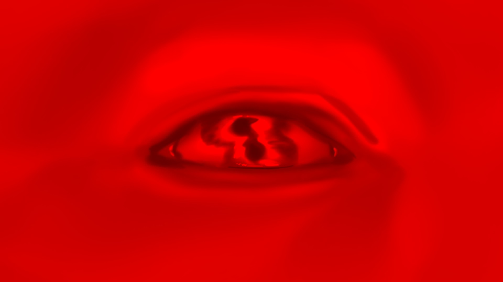
Полный свод знаний об Аде, машинах и ангелах Complete compendium of Hell, Machines and Angels
Ок. 1914: начало Последней войны; окопы, газ, первые автоматоны.
c. 1914: the Final War begins; trenches, gas, the first automatons.
Гаттермен: первые удачные машины на человеческой крови.
Gutterman: the first successful blood-powered war machines.
Гаттертанк: машины воюют с машинами; человек вытеснен с поля боя.
Guttertank: machine fights machine; humans are phased out of the battlefield.
Земледвигатели: города на спинах гигантских машин; Долгая ночь.
Earthmovers: cities on the backs of giants; the Long Night.
Новый Мир: конец войны, очистка воздуха, проект исследования Ада.
New Peace: the war ends, the air is cleaned, the Hell expedition begins.
2112: прошивка V1 (06.08.2112); прототипы серии V так и не пошли в серию.
2112: V1 firmware (2112.08.06); the V prototypes never enter mass production.
Исчезновение Бога: Небеса в панике, власть берёт Совет.
God disappears: Heaven panics, the Council takes power.
Ренессанс Похоти: Минос превращает слой в город.
Lust Renaissance: Minos turns the layer into a city.
Восстание Алчности: Сизиф собирает хасков в армию.
Greed Insurrection: Sisyphus raises an army of husks.
Казни: Габриэль убивает Миноса и Сизифа.
Executions: Gabriel kills Minos and Sisyphus.
Вымирание: людей больше нет; кровь в дефиците.
Extinction: mankind is gone; blood runs scarce.
Вторжение: машины спускаются в Ад за топливом.
Invasion: machines descend into Hell for fuel.
Лимб: V1 побеждает V2 и забирает Наклбластер.
Limbo: V1 defeats V2 and takes the Knuckleblaster.
Похоть: уничтожен Труп Короля Миноса.
Lust: the Corpse of King Minos is destroyed.
Обжорство: первое поражение Габриэля; P-1.
Gluttony: Gabriel's first defeat; P-1.
Алчность: V2 погибает; вскрыта пирамида Сизифа.
Greed: V2 dies; Sisyphus's pyramid is opened.
Гнев: Паромщик и Левиафан; P-2.
Wrath: the Ferryman and the Leviathan; P-2.
Ересь: второе поражение Габриэля; Совет уничтожен.
Heresy: Gabriel's second defeat; the Council is destroyed.
Насилие: Минотавр и 1000-THR «Земледвигатель».
Violence: the Minotaur and the 1000-THR Earthmover.
Обман: Город Мёртвого Солнца; Герион.
Fraud: the City of the Dead Sun; Geryon.
Предательство: 9-1 и 9-2 в разработке; данных нет.
Treachery: 9-1 and 9-2 in development; no data.
Лор ULTRAKILL собран из терминалов, книг на уровнях, «Заветов» в секретных уровнях и интермиссий. Это документы внутри мира, а не всеведущий рассказчик: их авторы могут ошибаться, а часть записей намеренно повреждена. Поэтому ниже отдельно помечено, что подтверждено игрой, а что является реконструкцией.
ULTRAKILL's lore is assembled from terminals, in-level books, the Testaments of the secret levels and the intermissions. These are in-world documents, not an omniscient narrator: their authors can be wrong, and some records are deliberately damaged. Below, what the game states is kept apart from reconstruction.
Ад жив. Это не метафора. Игра-загадка, приложенная к P-2, говорит прямо: «Ад жив. Он дышит. Он мыслит… Вся эта область — огромный разумный сверхорганизм… Это не атака… Это развлечение». Ад меняет геометрию, запирает арены и подбрасывает врагов, как режиссёр. Разумность Ада — канон; идея, что Ад станет финальным боссом, — пока теория.
Hell is alive. This is not a metaphor. The P-2 ARG states it outright: “hell is alive. it breathes. it thinks… the entire area is a massive intelligent superorganism… this is not an attack… this is entertainment”. Hell reshapes geometry, seals arenas and feeds enemies like a director. Hell's sentience is canon; the idea that Hell will be the final boss is still a theory.
Кровь — топливо. Почти все машины человечества работают на крови. V1 — исключение: его экспериментальная внешняя броня впитывает кровь при контакте, поэтому ему не нужна отдельная заправка. Именно это превращает его из прототипа в самую опасную машину в Аду.
Blood is fuel. Nearly every human machine runs on blood. V1 is the exception: its experimental outer plating absorbs blood on contact, so it needs no separate refuelling. That is what turns a discarded prototype into the most dangerous machine in Hell.
Хаски — души людей. После смерти душа получает физическую форму в Аду. Её облик, сила и разум зависят от «ценности» личности — воли, памяти и значимости при жизни. Слабые души становятся Мерзостью, сильные — Солдатами или гигантскими хасками вроде Трупа Короля Миноса.
Husks are human souls. After death a soul takes physical form in Hell. Its shape, strength and intellect depend on the “value” of the person — will, memory and significance in life. Weak souls become Filth; strong ones become Soldiers or giants like the Corpse of King Minos.
Демоны — фауна Ада. Они не были людьми. Большинство — сгустки Адской массы в каменной оболочке; некоторые, как Левиафан и Манекены, собраны из плоти грешников. Демоны — надзиратели и защитники слоёв, но не все из них разумны: ни один не прошёл зеркальный тест.
Demons are Hell's fauna. They were never human. Most are Hell Mass coiled inside a stone shell; some, like the Leviathan and the Mannequins, are built from the flesh of sinners. Demons guard the layers, but not all are sapient: none has passed the mirror test.
Ангелы живут Святым Светом. Свет дарует им вечность, но не неуязвимость. Отсечённый от источника ангел угасает за 24 часа. Совет умел отсекать и возвращать Свет — именно поэтому его приговор Габриэлю был смертным.
Angels live by the Holy Light. The Light grants them eternity, not invulnerability. An angel cut off from the source fades within 24 hours. The Council could sever and restore the Light — which is why its sentence on Gabriel was a death sentence.
Прайм-душа — чистая воля. Бесконечно редкий случай: душа накапливает столько силы, что больше не нуждается в теле-хаске. Ангелы считают такие души угрозой и пытаются запечатать их до формирования. Известны две — Минос Прайм и Сизиф Прайм.
A Prime Soul is pure will. An infinitely rare case: a soul accumulates so much power that it no longer needs a husk to manifest. Angels treat such souls as a threat and try to seal them before they form. Two are known — Minos Prime and Sisyphus Prime.
Машины — не люди. Но и не чистый инструмент. Дроны любопытны, уличные чистильщики одержимы очищением, машины-мечи собирают хлам и перестраивают себя, Терминалы научились скучать. V1 в момент смерти думает: «Я НЕ ХОЧУ УМИРАТЬ».
Machines are not human. But they are not pure tools either. Drones are curious, Streetcleaners are obsessed with cleansing, Swordsmachines scavenge and rebuild themselves, Terminals learned to be bored. At the moment of death V1 thinks: “I DON'T WANT TO DIE”.
Терминал «Земледвигатель» говорит: «200 лет войны ради самой войны закончились не взрывом, а полной тишиной». Других точных дат в игре нет. Единственная жёсткая отметка — прошивка V1: 2112.08.06. Отсюда реконструкция: война началась около 1914 года, а закончилась около 2114-го. В самой игре годы не названы, поэтому 1914 и 2114 — расчёт, а не цитата.
The Earthmover terminal says: “200 years of war for its own sake ended not with a bang, but utter silence”. The game gives no other exact dates. The one hard timestamp is V1's firmware: 2112.08.06. Hence the reconstruction: the war began around 1914 and ended around 2114. The game never names those years, so 1914 and 2114 are calculation, not quotation.
Война началась как улучшенная Первая мировая: окопы, пулемёты, газ, волны пехоты. Прорыв измерялся метрами, а человеческая жизнь — килограммами металла. Когда фронт окончательно застыл, обе стороны начали искать выход в инженерии.
The war began as an upgraded First World War: trenches, machine guns, gas, infantry waves. Breakthroughs were measured in metres and human lives in kilograms of steel. When the front froze for good, both sides turned to engineering.
Гаттермен — один из первых успешных опытов использования крови как топлива. Внутрь корпуса ставили живого человека на минимальном жизнеобеспечении и заваривали броню наглухо: консервировать кровь ещё не умели. Официально это называли «добровольцами-патриотами»; на деле внутрь отправляли дезертиров, измотанных солдат и пленных. На плече машины читается маркировка ЧТ-01 (человек-танк), поэтому её часто связывают с Российской империей, но в тексте терминала страна прямо не названа.
Gutterman was one of the first successful experiments in using blood as fuel. A living person on minimal life support was sealed inside the hull, because blood could not yet be preserved. Officially these were “patriotic volunteers”; in practice they were deserters, exhausted soldiers and prisoners. The shoulder marking reads ЧТ-01 (human tank), so the machine is often tied to the Russian Empire, though the terminal never names a country.
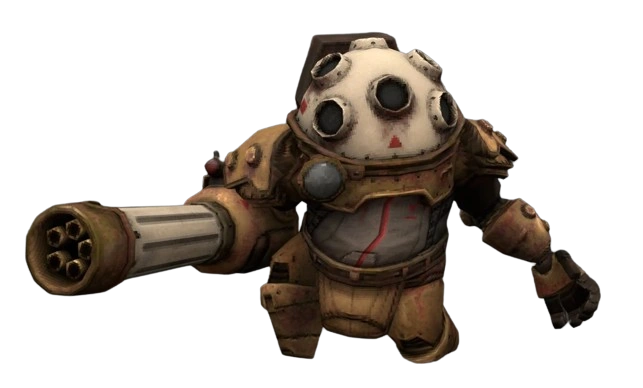
Первая широко применённая боевая машина на человеческой крови. Медленная, бронированная, с тяжёлым пулемётом; её появление похоронило эпоху окопной пехоты.
The first widely deployed war machine running on human blood. Slow, armoured, heavy-gunned; its arrival buried the era of trench infantry.
Ответом стал Гаттертанк — машина, собранная на основе Гаттермена ради экономии времени. На его левой руке читается «ФАУСТ ПАНЦЕР», что указывает на германский проект. Терминал описывает вторую фазу войны: «машины сражались с машинами в волнах туда и обратно… каждая создавалась специально против предыдущей». Люди на поле боя стали анахронизмом: солдаты возвращались домой и находили, что дома их никто не ждал.
The answer was the Guttertank, built on Gutterman foundations to save time. Its left arm reads FAUST PANZER, pointing to a German project. The terminal describes the second phase: “machines fought machines in a back-and-forth tide… each designed specifically to counter the last”. Humans on the battlefield became an anachronism: soldiers came home to find no one waiting.
К этому же периоду относятся Часовые — тяжёлые стационарные орудия, Уличные чистильщики — машины для очистки заражённого воздуха, позже перепрофилированные в разведчиков Ада, и Дроны — массовые охранные дроны. Машина-меч — не заводская модель: это машина, которая годами собирала хлам и перестраивала себя, пока не стала чем-то новым.
This era also produced the Sentry, a heavy stationary gun; the Streetcleaner, built to purify poisoned air and later repurposed as a Hell scout; and the Drone, a mass-produced security unit. The Swordsmachine is not a factory model: it scavenged and rebuilt itself for years until it became something new.
Земледвигатель — вершина войны. «Их часто называют всадниками апокалипсиса: одной машины хватало, чтобы сровнять целый город и оставить после себя только огонь». Это первые машины, достаточно большие для щитового генератора; уязвимые только изнутри, они стали новыми фронтами для малых машин. Из-за колоссальных размеров им требовались и кровь, и солнечный свет.
The Earthmover is the war's apex. “Often called the horsemen of the apocalypse, it took only one to level an entire city and leave nothing but fire in its wake.” They were the first machines large enough to carry a shield generator; vulnerable only from within, they became new frontlines for smaller machines. Their colossal size required both blood and solar power.
Люди, пережившие бомбардировки, начали строить города на спинах Земледвигателей. Но сажа, дым и гниль бесконечной войны закрыли солнце — началась Долгая ночь. Лишённые света Земледвигатели один за другим останавливались и умирали. Война закончилась не победой, а тишиной.
Survivors began building cities on the backs of Earthmovers. But soot, smoke and decay from the endless war blotted out the sun — the Long Night began. Starved of sunlight, the Earthmovers shut down and died one by one. The war ended not in victory, but in silence.
После Долгой ночи люди объединились, чтобы обратить климатическую катастрофу: чистили воздух, клонировали животных, отстраивали города. Этот период называют Новым Миром. Именно тогда были заложены прототипы V1 и V2 — и именно тогда война закончилась настолько, что военные машины стали ненужными.
After the Long Night humanity united to reverse the climate catastrophe: cleaning the air, cloning animals, rebuilding cities. This period is the New Peace. The V1 and V2 prototypes were laid down then — and the war ended so thoroughly that war machines became unnecessary.
Затем был обнаружен вход в Ад. Вокруг него построили горнодобывающий комплекс, а старые военные машины перепрофилировали для экспедиций. Терминалы создали, чтобы пересылать предметы на большие расстояния, превращая материю в радиосигнал. Единственный успешный перенос — пластинка «О, ты меня обманывал?» оркестра Расса Моргана. Позже Терминалы обрели способность скучать и придумали Кибер-Гриндер.
Then the entrance to Hell was found. A mining complex was built around it, and old war machines were repurposed for the expeditions. Terminals were built to transport items over distance by turning matter into radio signals. The only successful transfer was a Russ Morgan Orchestra record, “Oh Were You Foolin'”. Later the Terminals learned to be bored and invented the Cyber Grind.
Человечество вымерло. Терминал говорит об этом без объяснений: «Неизвестно, как, когда и почему это произошло». Косвенный след — резкий приток душ, сдвинувший течение Стикса в Гневе. После исчезновения людей кровь стала дефицитом, и машины начали воевать друг с другом за топливо, а затем хлынули в Ад.
Humankind went extinct. The terminal offers no explanation: “It is unknown how, when, or why it happened.” One indirect trace is the sudden influx of souls that shifted the flow of the Styx in Wrath. With humans gone, blood became scarce; machines fought each other for fuel, then poured into Hell.
V1 и V2 — два прототипа серии V. V1 получил экспериментальную броню, впитывающую кровь, но она была тонкой и хрупкой. V2 сделали как более надёжную «маркетинговую» версию для мирного времени: тяжёлая броня, стандартная заправка. В серию не пошла ни одна модель. V2 существует в единственном экземпляре.
V1 and V2 are the two V-series prototypes. V1 received experimental blood-absorbing plating, but it was thin and fragile. V2 was built as a more reliable “marketing” version for peacetime: heavy armour, standard refuelling. Neither model entered mass production. V2 exists as a single unit.
Бог создал Землю, Небеса и Ад — и раскаялся. «Завет I» называет человечество неудачей, а свободную волю — изъяном. «Завет III» говорит: «Я создал Ад… и не могу его отменить». «Завет V» завершает мысль: Бог искал конец своих дней, но «бездна отвела взгляд». После этого он исчез.
God created Earth, Heaven and Hell — and repented. Testament I calls mankind a failure and free will a flaw. Testament III says: “I created Hell… and I cannot unmake it.” Testament V completes the thought: God sought the end of his days, but “the abyss averted its gaze.” Then he disappeared.
Исчезновение вызвало панику в Раю. Ангелы отозвали своих из Ада, и слои остались без надзора. Именно эту пустоту заполнил Совет — группа высших ангелов, правившая «силой и страхом» от имени Бога, которого больше не было.
The disappearance caused panic in Heaven. Angels withdrew from Hell and the layers were left unwatched. The Council filled that void — a group of high angels ruling “by force and fear” in the name of a God who was no longer there.
Совет толковал волю Отца всё более догматично. Приказы исполнял Габриэль — «Воля Божья», самый преданный и самый популярный из ангелов. Формально он подчинялся Совету, но именно его любили больше, чем Совет, и это стало первой трещиной.
The Council interpreted the Father's will ever more dogmatically. Its orders were carried out by Gabriel — “God's Will”, the most devoted and most popular of the angels. Formally he answered to the Council, but the angels loved him more than they loved the Council, and that was the first crack.
Король Минос, бывший Судья Ада, после исчезновения Бога начал реформировать слой Похоти. Он превратил ледяной город в место, где грешники получили подобие жизни и надежды. Совет счёл это нарушением воли Бога: Минос пытался договориться, но Габриэль убил его без разговора, произнеся «Правосудие… Да свершится воля Господня», и занял его место Судьи.
King Minos, the former Judge of Hell, began reforming the Lust layer after God vanished. He turned the frozen city into a place where sinners had something like life and hope. The Council called it a violation of God's will: Minos tried to negotiate, but Gabriel killed him without a word — “Justice… The Lord's Will be done” — and took his place as Judge.
В Алчности Сизиф воспользовался отсутствием ангелов: собрал умных и сильных хасков, обучил их и повёл против демонов. Его армия держалась на харизме короля, поэтому Габриэль сосредоточил удар на нём. Сизифа обезглавили двумя мечами — «Правосудие» и «Великолепие», — а душу заперли в Плоть-паноптикум.
In Greed, Sisyphus exploited the angels' absence: he gathered intelligent, powerful husks, trained them and led them against the demons. His army rested on the king's charisma, so Gabriel struck at him directly. Sisyphus was beheaded with two swords — Justice and Splendor — and his soul was sealed in the Flesh Panopticon.
В 3-2 Габриэль впервые сталкивается с V1 и проигрывает. Совет не верит, что машина могла победить ангела: Габриэля обвиняют в измене, отсекают от Святого Света и дают 24 часа, чтобы вернуть голову V1. В 6-2 он проигрывает снова — и вместо казни машины идёт в Перводвигатель.
In 3-2 Gabriel faces V1 for the first time and loses. The Council refuses to believe a machine could beat an angel: Gabriel is accused of treason, cut off from the Holy Light, and given 24 hours to bring back V1's head. In 6-2 he loses again — and instead of executing the machine, he goes to the Primum Mobile.
Он вырезает Совет в аудитории. Последний советник кричит, что без него Габриэль не сможет восстановить связь со Светом и умрёт через несколько часов. Ответ: «Я знаю». Голову последнего советника показывают всем ангелам. После этого Габриэль навсегда покидает Рай. Его слова: «Смирись, брат. Бог мёртв. Огонь угас. Ты гонишься за призраками».
He slaughters the Council in its chamber. The last councillor screams that without him Gabriel cannot reconnect to the Light and will die within hours. The answer: “I know.” The last councillor's head is shown to all angels. Gabriel then leaves Heaven forever. His words: “Face it, brother. God is dead. The fire is gone. You're chasing phantoms.”
Архангелы. На картине в 8-1 изображены Михаил — «Премудрость Божья», Рафаил — «Сила Божья», Габриэль — «Воля Божья», Фануил — «Терпение Божье» и вырванное место с затёртой подписью, которое почти наверняка принадлежало Люциферу. Биографий Михаила, Рафаила и Фануила в игре нет: это имена и титулы, а не персонажи с прописанной судьбой.
The Archangels. A painting in 8-1 shows Michael — “God's Wisdom”, Raphael — “God's Strength”, Gabriel — “God's Will”, Phanuel — “God's Patience”, and a torn-out place with an erased name that almost certainly belonged to Lucifer. Michael, Raphael and Phanuel have no biographies in the game: they are names and titles, not characters with a written fate.
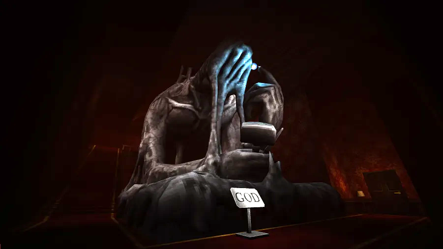
Статуя в 8-1: восковая фигура без лица, с молотом и резцом, держит Землю с одним континентом. Её происхождение и смысл официально неизвестны. Трактовка «Бог обратился в статую» — фанатская; канон подтверждает лишь то, что Бог исчез, а статуя стоит.
The statue in 8-1: a faceless wax figure with hammer and chisel, holding an Earth with a single continent. Its origin and meaning are officially unknown. “God turned to stone” is a fan reading; canon confirms only that God vanished and the statue stands.
Иерархия ангелов. Малые ангелы рождаются из человеческих душ — это Добродетели и Провидения. Великие ангелы телесно неполны — это Власти, ученики Габриэля, носящие золотую руку. Высшие ангелы сотворены Богом целиком; из них известен Габриэль. Чем выше статус, тем человечнее облик и тем ближе ангел к Богу.
Angel hierarchy. Lesser Angels are born from human souls — Virtues and Providences. Greater Angels are physically incomplete — the Powers, Gabriel's students, who wear a golden arm. Supreme Angels were created whole by God; Gabriel is the known example. The higher the rank, the more human the shape and the closer the angel to God.
После вымирания людей машины спустились в Ад не ради войны, а ради крови. Для ангелов это было оскорблением: «всего лишь объекты» осмелились войти в их владения. Габриэль отмечает, что машин так много, что они очищают слои за дни. Именно это превращает V1 из очередного хищника в угрозу всей небесной иерархии.
After mankind's extinction the machines entered Hell not for war but for blood. To the angels this was an insult: “mere objects” dared to enter their domain. Gabriel notes that the machines are so numerous they clear layers in days. That is what turns V1 from another predator into a threat to the entire heavenly order.
Прелюдье — лобби Ада: заброшенный горнодобывающий комплекс, построенный людьми вокруг входа в преисподнюю. Формально V1 ещё не в Аду; она входит в него только после победы над Церберами в 0-5. Это место, где цивилизация оставила свои механизмы, которым больше некому отдавать приказы.
The Prelude is Hell's lobby: the abandoned mining complex humanity built around the entrance to the underworld. Formally V1 is not yet in Hell; it enters only after defeating the Cerberi in 0-5. This is where civilisation left its machines with no one left to give orders.
Первое знакомство с V1: калибровка, револьвер и вход в Устье Ада. Уровень учит крови, парированию и тому, что машина ремонтируется только чужим топливом.
V1's first outing: calibration, the revolver and the mouth of Hell. The level teaches blood, parrying and the fact that the machine repairs itself only with someone else's fuel.
Первый уровень — калибровка. Экран запуска показывает машину, цель и три строки, которые стали слоганом игры: «ЧЕЛОВЕЧЕСТВО МЕРТВО. КРОВЬ — ТОПЛИВО. АД ПЕРЕПОЛНЕН.» В зале с револьвером стоят четыре неактивные статуи Цербера; свет включается, когда V1 поднимает оружие с пьедестала. Дальше — «Мясорубка»: шахты, Терминалы и первый спуск вглубь.
The first level is a calibration. The boot screen shows the machine, the objective and the three lines that became the game's slogan: “MANKIND IS DEAD. BLOOD IS FUEL. HELL IS FULL.” The Revolver hall holds four inactive Cerberus statues; the lights come on when V1 lifts the weapon from its pedestal. Beyond lies “The Meatgrinder”: mines, Terminals and the first descent.
Спуск в промышленные тоннели. Уровень вводит Раскола и Злобную морду, а также показывает, как Ад перестраивает пространство: коридоры, которых не было на карте. Здесь же находится вход в 0-S. Следующая шахта ведёт к «Двойному удару» и первым Солдатам.
A descent into industrial tunnels. The level introduces the Schism and the Malicious Face, and shows Hell reshaping space: corridors that were not on the map. The entrance to 0-S is here. The next shaft leads to “Double Down” and the first Soldiers.
Вертикальная шахта и первые серьёзные бои с участием Солдата. Уровень учит использовать Хлыст и не забывать про кровь как источник здоровья: машина ремонтируется только тем, что выбивает из врагов. Глубже ждёт «Армия из одной машины» — открытая арена и Мерзкая масса.
A vertical shaft and the first serious fights involving Soldiers. The level teaches the Whiplash and the blood economy: the machine repairs itself only with what it tears out of enemies. Deeper waits “A One-Machine Army” — an open arena and a Hideous Mass.
Открытая арена и демонстрация того, что V1 — не спасатель и не солдат. Это оружие, которое само себя обслуживает. Уровень вводит Мерзкую массу и заканчивается спуском к вратам. За ареной — «Цербер»: врата Ада и стражи, которых никто не сменил.
An open arena demonstrating that V1 is neither a rescuer nor a soldier. It is a weapon that maintains itself. The level introduces the Hideous Mass and ends at the descent to the gates. Beyond the arena is “Cerberus”: the gates of Hell and wardens no one replaced.
Финал Прелюдья. Церберы — демоны-стражи, когда-то охранявшие врата, теперь брошенные на произвол судьбы. После боя V1 входит в Ад. Дальше — Лимб. За вратами начинается Лимб — красное небо и души, не выбравшие сторону.
The Prelude's finale. The Cerberi are demon wardens who once guarded the gates and were left to themselves. After the fight V1 enters Hell. Next comes Limbo. Past the gates begins Limbo — a red sky and souls who chose no side.
Лимб — слой душ, которые не выбрали ни добро, ни зло. Здесь нет огня и льда, только красное небо, обрушенные города и бесконечные лестницы. Это первый слой, где V1 встречает себе подобного.
Limbo is the layer of souls who chose neither good nor evil. There is no fire or ice, only a red sky, collapsed cities and endless stairs. It is the first layer where V1 meets something like itself.
Вход в Лимб и знакомство с Бродягой. Уровень задаёт тон Акту: длинные вертикали, парирование снарядов и ощущение, что город был оставлен в спешке. Дальше — «Горящий мир»: пылающий город и Раковые грызуны.
Entry into Limbo and the introduction of the Stray. The level sets the act's tone: long verticals, projectile parries and the sense that the city was abandoned in a hurry. Next is “The Burning World”: a burning city and Cancerous Rodents.
Пылающий город и первые Раковые грызуны в секретной комнате. Именно здесь появляется Мерзкая масса как полноценный противник, а не пугало в декорациях. Следом — «Залы святотатства»: вера как архитектура и первый Сталкер.
A burning city and the first Cancerous Rodent in a secret room. This is where the Hideous Mass appears as a real opponent rather than scenery. Then “Halls of Sacrilege”: faith as architecture and the first Stalker.
Храмовые залы, где вера превратилась в архитектуру. Уровень вводит Сталкера — хаска, который засыпает V1 песком и блокирует лечение. Приоритет цели здесь важнее скорости. Впереди — «Лунный свет»: встреча с V2 и Наклбластер.
Temple halls where faith became architecture. The level introduces the Stalker, a husk that covers V1 in sand and blocks healing. Target priority matters more than speed here. Ahead is “Clair de Lune”: the meeting with V2 and the Knuckleblaster.
Храмовые залы Лимба, где вера стала архитектурой. Здесь впервые появляется Сталкер — хаск, который песком блокирует лечение.
Limbo's temple halls, where faith became architecture. This is where the Stalker debuts — a husk whose sand blocks healing.
Первая встреча с V2. Второй прототип ждёт V1 у выхода из Лимба и проигрывает, потеряв левую руку. Из неё V1 собирает Наклбластер. V2 не погибает: он отступает, и это делает финал Алчности личным. За Лимбом — Похоть: ледяной город Миноса и мост, который вот-вот рухнет.
The first meeting with V2. The second prototype waits at Limbo's exit and loses a left arm. V1 turns it into the Knuckleblaster. V2 does not die: it retreats, which makes the Greed finale personal. Beyond Limbo is Lust: Minos's frozen city and a bridge about to collapse.
Похоть — ледяной город, который Минос превратил в Ренессанс. Труп короля виден в фоне каждого уровня: он растёт, приближается и в конце концов становится ареной. Это один из лучших примеров того, как Ад использует память о человеке против него самого.
Lust is the frozen city Minos turned into a Renaissance. The king's corpse is visible in every level's background: it grows, approaches, and finally becomes the arena. It is one of the best examples of Hell using a person's memory against them.
Мост, который вот-вот рухнет, и первые Манекены в качестве декораций. Уровень показывает, что город Миноса был построен на спешке: красивые фасады держатся на честном слове. Дальше — «Смерть при 20 000 вольт»: электростанция и книга о казни Миноса.
A bridge about to collapse and the first Mannequins as scenery. The level shows that Minos's city was built in haste: beautiful facades held together by little more than hope. Next is “Death at 20,000 Volts”: a power station and the book about Minos's execution.
Электростанция и книга, из которой становится ясно, как Габриэль казнил Миноса. Минос не сопротивлялся: он пытался объяснить, что реформы не нарушают волю Бога. Габриэль не стал слушать. Следом — «Сердечный приступ»: погоня по крышам и вход в 2-S.
A power station and the book that reveals how Gabriel executed Minos. Minos did not resist: he tried to explain that the reforms did not violate God's will. Gabriel did not listen. Then “Sheer Heart Attack”: a rooftop chase and the entrance to 2-S.
Электростанция Похоти и книга о казни Миноса. Один из ключевых лорных уровней акта: Габриэль показан не воином, а палачом.
Lust's power station and the book about Minos's execution. One of the act's key lore levels: Gabriel is shown not as a warrior but as an executioner.
Погоня по крышам и вход в 2-S. Уровень проверяет движение: стоять на месте здесь дороже, чем ошибиться в прыжке. Впереди — «Труп Короля Миноса»: тело короля и его паразиты.
A rooftop chase and the entrance to 2-S. The level tests movement: standing still costs more than a missed jump. Ahead is “The Corpse of King Minos”: the king's body and its parasites.
Босс Похоти — Труп Короля Миноса, крупнейший хаск в игре. Тело анимируют змеевидные паразиты, которыми Минос когда-то командовал. В первой фазе рука пробивает стену, во второй из глаз вырываются паразиты, а в центре открывается чёрная дыра. За телом — «Чрево зверя»: слой-тело и вход в P-1.
Lust's boss is the Corpse of King Minos, the largest husk in the game. The body is animated by serpentine parasites Minos once commanded. In the first phase a hand punches through a wall; in the second parasites burst from the eyes and a black hole opens in the centre. Beyond the body is “Belly of the Beast”: a layer that is a body and the entrance to P-1.
Обжорство — слой, который буквально является телом. Коридоры — пищеводы, стены — мышцы, а в центре — сердце, которое нужно уничтожить. Здесь V1 впервые сталкивается с ангелом.
Gluttony is a layer that is literally a body. Corridors are oesophagi, walls are muscle, and at the centre is a heart that must be destroyed. This is where V1 first faces an angel.
Спуск в чрево. Здесь находится секретный выход в P-1: чтобы открыть его, нужны P-ранги на всех уровнях Прелюдья и Акта I. Уровень вводит Добродетель — ангела-надзирателя, который карает грешников небесным огнём. Глубже — «Во плоти»: первый бой с Габриэлем.
A descent into the belly. The secret exit to P-1 is here: opening it requires P-ranks on every Prelude and Act I level. The level introduces the Virtue, an angelic warden who punishes sinners with divine fire. Deeper is “In the Flesh”: the first fight with Gabriel.
Финальный бой Акта I. Габриэль сражается только световым оружием, оставив мечи в ножнах: он всё ещё считает V1 объектом, а не противником. После поражения Совет отсекает его от Святого Света и даёт 24 часа. За приговором — P-1: Плоть-тюрьма и Минос Прайм.
Act I's final fight. Gabriel fights only with light constructs, his swords still sheathed: he still considers V1 an object, not an opponent. After the loss the Council cuts him off from the Holy Light and gives him 24 hours. Beyond the sentence is P-1: the Flesh Prison and Minos Prime.
Финал Обжорства: первый бой с Габриэлем и приговор Совета. Ангел ещё не считает V1 достойным противником.
Gluttony's finale: the first fight with Gabriel and the Council's sentence. The angel does not yet consider V1 a worthy opponent.
Прайм-святилище под Обжорством. Сначала V1 уничтожает Плоть-тюрьму — органическую машину, созданную ангелами для заточения души Миноса. Затем из обломков поднимается Минос Прайм: «Свободен наконец… О Габриэль, близится твой расчёт… и твоё наказание… СМЕРТЬ». Следующий слой — Алчность: золото, шахты и тень Сизифа.
The Prime Sanctum beneath Gluttony. V1 first destroys the Flesh Prison, an organic machine built by angels to hold Minos's soul. Then Minos Prime rises from the wreckage: “Free at last… O Gabriel, now dawns thy reckoning… and thy punishment… is DEATH.” The next layer is Greed: gold, mines and the shadow of Sisyphus.
Алчность — золотые храмы, шахты и пирамиды, построенные на жадности. После казни Сизифа слой опустел: его армия разбежалась, а тело короля спрятали в пирамиде. Габриэль оставил там мечи и фрески — как напоминание о том, кто на самом деле победил.
Greed is golden temples, mines and pyramids built on avarice. After Sisyphus's execution the layer emptied: his army scattered and the king's body was hidden in a pyramid. Gabriel left swords and frescoes there — a reminder of who really won.
Вход в слой и первое появление Сизифа в качестве силуэта. Уровень строится вокруг вертикали: чем выше, тем меньше воздуха и тем больше золота. Дальше — «Будь проклято солнце»: Сизифовский инсуррекционист.
Entry into the layer and the first appearance of Sisyphus as a silhouette. The level is built around verticality: the higher you go, the less air and the more gold. Next is “God Damn the Sun”: the Sisyphean Insurrectionist.
Босс — Сизифовский инсуррекционист, безголовый гигант с телом Злобной морды вместо булавы. Его ноги в крови, чтобы ходить по раскалённому песку. Уязвим к огню, но убивать его лучше на расстоянии. Следом — «Выстрел в темноте»: тёмный уровень и шуточный бой с друидом.
The boss is the Sisyphean Insurrectionist, a headless giant wielding a Malicious Face as a mace. Its legs are coated in blood so it can walk on burning sand. It is vulnerable to fire, but better killed at range. Then “A Shot in the Dark”: a dark level and a joke fight with the druid.
Тёмный уровень с секретным боссом Таинственным рыцарем-друидом (и совой). Это шуточный бой с четырьмя полосами здоровья по 20 и репликами вроде «Используй соль!». Канон здесь не расширяется — расширяется чувство юмора. Впереди — «Солнечный свет»: последний бой с V2 и пирамида Сизифа.
A dark level with the secret boss Mysterious Druid Knight (& Owl). It is a joke fight with four 20-HP bars and lines like “Use the salt!”. It does not expand the canon — it expands the sense of humour. Ahead is “Clair de Soleil”: the last fight with V2 and Sisyphus's pyramid.
Второй и последний бой с V2. К этому моменту он собрал Хлыст и догнал V1; сидит на троне в отсылке к «Акире». После поражения V2 срывается по стене пирамиды и разбивается. Хатита подтвердил, что реконструировать его нельзя: «ЧТО РЕКОНСТРУИРОВАТЬ?!». За пирамидой — Гнев: затопленный город и первые Идолы.
The second and final fight with V2. By now it has built the Whiplash and caught up with V1; it sits on a throne in an Akira reference. After losing, V2 falls down the pyramid wall and shatters. Hakita confirmed it cannot be reconstructed: “RECONSTRUCT WHAT?!” Beyond the pyramid is Wrath: a flooded city and the first Idols.
Второй и последний бой с V2. Трон, пирамида и гибель второго прототипа — уровень, который закрывает историю серии V.
The second and final fight with V2. A throne, a pyramid and the death of the second prototype — the level that closes the V-series story.
Гнев — затопленный город и река Стикс, вышедшая из берегов. После вымирания людей приток душ сдвинул течение, и вода поднялась. Здесь появляются Паромщики — хаски, перевозившие души между слоями, и Левиафан, выросший из утонувших.
Wrath is a flooded city and the Styx overflowing. After mankind's extinction the influx of souls shifted the current and the water rose. Here appear the Ferrymen, husks who carried souls between layers, and the Leviathan, grown from the drowned.
Затопленные улицы и первый намёк на то, что вода здесь не просто декорация. Уровень вводит Идола — демона-щит, которого можно уничтожить только ударом. Дальше — «Волны Беззвёздного моря»: Паромщик и души без переправы.
Flooded streets and the first hint that the water is not mere scenery. The level introduces the Idol, a demon shield that can only be destroyed by a direct hit. Next is “Waves of the Starless Sea”: the Ferryman and souls without a crossing.
Босс — Паромщик, вернее один из них. Это не Харон и не имя: это вид хасков, которые содрали с себя плоть и перевозят души за плату. С падением человечества поток душ иссяк, и паромщики остались без работы. Бой идёт на носу корабля, а палубу защищает Идол. Следом — «Корабль дураков»: паром переворачивается, и появляется Левиафан.
The boss is a Ferryman — one of them. This is not Charon and not a name: it is a species of husk that flayed itself and carries souls for a price. When mankind fell, the flow of souls dried up and the ferrymen were left without work. The fight takes place on a ship's bow, with an Idol guarding the deck. Then “Ship of Fools”: the ferry capsizes and the Leviathan appears.
Паром переворачивается, и впервые мелькает Левиафан. Уровень короткий, но именно он объясняет, почему океан кишит телами: Левиафан растёт с каждым утопленником. Впереди — «Левиафан»: высший демон из тел Угрюмых.
The ferry capsizes and the Leviathan appears for the first time. The level is short, but it explains why the ocean is full of bodies: the Leviathan grows with every drowning. Ahead is “Leviathan”: a Supreme Demon made of the Sullen.
Финальный босс Гнева. Левиафан — высший демон, собранный не из Адской массы, а из тел Угрюмых: утонувших, потерявших волю бороться за воздух. На его голове — освежёванная кричащая фигура, которую он пытался сбросить, но Габриэль пригвоздил её божественными копьями. За океаном — Ересь: железный город Дит и ангелы, которые боятся V1.
Wrath's final boss. The Leviathan is a Supreme Demon built not from Hell Mass but from the bodies of the Sullen: the drowned who lost the will to fight for air. On its head is a flayed, screaming figure it tried to throw off, but Gabriel pinned it there with divine spears. Beyond the ocean is Heresy: the iron City of Dis and angels who fear V1.
Затопленный город Гнева, первые Идолы и намёк на Левиафана. Вода здесь — не декорация, а часть наказания.
Wrath's flooded city, the first Idols and a hint of the Leviathan. The water here is not scenery but part of the punishment.
Ересь — соборный город, где вера стала оружием. Здесь нет воды и золота, только железо, огонь и бесконечные хоры. Слой заканчивается вторым боем с Габриэлем и интермиссией, в которой рушится Совет.
Heresy is a cathedral city where faith became a weapon. There is no water or gold, only iron, fire and endless choirs. The layer ends with the second Gabriel fight and the intermission in which the Council falls.
Вход в город и первая Власть — вернее, её отсутствие: Власти появляются позже, в 8-3. Здесь же становится ясно, что ангелы уже знают о V1 и боятся его. Дальше — «Эстетика ненависти»: второй бой с Габриэлем.
Entry into the city and the first hint of the Power — or rather its absence: Powers appear later, in 8-3. Here it becomes clear that the angels already know about V1 and fear it. Next is “Aesthetics of Hate”: the second fight with Gabriel.
Второй бой с Габриэлем. Теперь он в красных доспехах, с мечами «Правосудие» и «Великолепие», и начинает бой в ярости. После поражения он не убивает V1, а уходит в Рай — вырезать Совет. Титул в этом бою — Отступник Ненависти, «Отступник Ненависти», а не «Апостол». За расколом Небес — P-2: Плоть-паноптикум и Сизиф Прайм.
The second fight with Gabriel. He now wears red armour, wields Justice and Splendor, and starts the fight enraged. After losing he does not kill V1 but goes to Heaven to slaughter the Council. His title in this fight is Apostate of Hate, not “Apostle”. Beyond the schism of Heaven is P-2: the Flesh Panopticon and Sisyphus Prime.
Вход в город Дит. Ангелы уже знают о V1 и боятся его; впереди — второй бой с Габриэлем.
Entry into the City of Dis. The angels already know and fear V1; the second Gabriel fight lies ahead.
Второе прайм-святилище, вход в 6-2. Сначала — гаунтлет по Городу Дит, затем Плоть-паноптикум и Сизиф Прайм. Сизиф вырывается из паноптикона со словами «Эта тюрьма… Чтобы удержать… МЕНЯ?» и обещает «сровнять города и СОКРУШИТЬ армии Небес». Следующий слой — Насилие: поле Последней войны и лабиринт Минотавра.
The second Prime Sanctum, entered from 6-2. First a gauntlet through the City of Dis, then the Flesh Panopticon and Sisyphus Prime. Sisyphus breaks out with “This prison… To hold… ME?” and promises to “tear down the cities and CRUSH the armies of Heaven”. The next layer is Violence: the field of the Final War and the Minotaur's labyrinth.
Статус на ноябрь 2026. Акт III вышел не полностью. Доступны слои 7 (Насилие) и 8 (Обман); слой 9 (Предательство) находится в разработке, в файлах видны только 9-1 и 9-2. Игра по-прежнему в раннем доступе; 8-S, P-3 и сложность «УЛЬТРАКИЛЛ: Все должны умереть» официально не выпущены.
Status as of November 2026. Act III is not complete. Layers 7 (Violence) and 8 (Fraud) are available; Layer 9 (Treachery) is in development, with only 9-1 and 9-2 present in the files. The game remains in Early Access; 8-S, P-3 and the ULTRAKILL Must Die difficulty are not officially released.
Насилие — слой, в котором Ад перестаёт притворяться. Здесь нет городов и храмов: только поле боя Последней войны, воронки, окопы и Земледвигатели. Именно здесь становится ясно, что машины пришли в Ад не случайно: они возвращаются туда, где были созданы.
Violence is the layer where Hell stops pretending. There are no cities or temples: only the battlefield of the Final War, craters, trenches and Earthmovers. Here it becomes clear that the machines did not come to Hell by accident: they are returning to where they were made.
Лабиринт, в который Минос заточил Минотавра. Чудовище было слеплено неизвестным скульптором в дар Миносу; король ужаснулся «гротескной карикатуре на свои прошлые ошибки» и спрятал его. Единственное желание Минотавра — увидеть небо. Уровень также вводит Манекенов и секретного Большого Джонинатора. Дальше — «Зажги ночь»: возвращение Гаттермена и Гаттертанка.
The labyrinth where Minos imprisoned the Minotaur. The beast was sculpted by an unknown artist as a gift to Minos; the king was horrified by this “grotesque caricature of his past mistakes” and hid it. The Minotaur's only wish is to see the sky. The level also introduces the Mannequins and the secret Big Johninator. Next is “Light Up the Night”: the return of the Gutterman and Guttertank.
Возвращение Гаттермена и Гаттертанка — теперь как врагов V1. На горизонте видны три Земледвигателя. Уровень объясняет, почему война длилась двести лет: каждая машина была ответом на предыдущую. Следом — «Ни звука, ни памяти»: лес, одинокий Земледвигатель и Кукла.
The return of the Gutterman and Guttertank — now as V1's enemies. Three Earthmovers are visible on the horizon. The level explains why the war lasted two hundred years: every machine was an answer to the last. Then “No Sound, No Memory”: a forest, a lone Earthmover and a Puppet.
Лес и одинокий Земледвигатель. Уровень вводит Куклу — тело из чистой крови, растущее как дерево. Здесь находится вход в 7-S. Небо этого уровня не вращается — единственный такой случай в игре. Впереди — «…Словно антенны к небесам»: 1000-THR «Земледвигатель».
A forest and a lone Earthmover. The level introduces the Puppet, a body of pure blood that grows like a tree. The entrance to 7-S is here. This level's sky does not rotate — the only such case in the game. Ahead is “…Like Antennas to Heaven”: the 1000-THR Earthmover.
Финал Насилия. V1 проникает внутрь 1000-THR «Земледвигатель», уничтожает Систему обороны из семи компонентов и добивает мозг. За победу дают стиль-бонус +СМЫСЛ ЖИЗНИ — намёк, что V1 и создавался как средство против Земледвигателей. За полем боя — Обман: особняк Нового Мира, статуя Бога и картина архангелов.
The finale of Violence. V1 enters the 1000-THR Earthmover, destroys the seven-part Defense System and kills the brain. Victory grants the style bonus +RAISON D'ETRE — a hint that V1 was built as a counter to Earthmovers. Beyond the battlefield is Fraud: a New Peace mansion, the God statue and the archangels' painting.
Лабиринт Минотавра, Манекены и вход в 7-S. Сад расходящихся троп — место, где Минос спрятал собственное чудовище.
The Minotaur's labyrinth, the Mannequins and the entrance to 7-S. The Garden of Forking Paths is where Minos hid his own monster.
Обман — слой иллюзий, зеркал и театра. Здесь Ад не просто меняет геометрию, а ставит спектакль: отели, улицы и целые кварталы оказываются декорациями. Финал слоя подтверждает это буквально — бой с Герионом идёт в пустом театре.
Fraud is a layer of illusions, mirrors and theatre. Here Hell does not merely reshape geometry; it stages a play: hotels, streets and whole districts turn out to be sets. The layer's finale confirms it literally — the Geryon fight takes place in an empty theatre.
Особняк эпохи Нового Мира, который постепенно превращается в искажённый город. Здесь находятся статуя Бога и картина архангелов. Уровень вводит Провидение — малых ангелов, посланных найти Габриэля после гибели Совета. Дальше — «Сквозь зеркало»: Зеркальный жнец и вход в 8-S.
A New Peace mansion that gradually becomes a distorted city. The God statue and the archangels' painting are here. The level introduces Providences, lesser angels sent to find Gabriel after the Council's fall. Next is “Through the Mirror”: the Mirror Reaper and the entrance to 8-S.
Зеркальный уровень. Босс — Зеркальный жнец, а Ловец смерти реплицирует павших врагов как кукол. В лифте спрятан вход в 8-S: код 142412. Внутри — записка «ТЕБЕ ЗДЕСЬ НЕ МЕСТО». Следом — «Петля распада»: Власти и паромщики Рудракша и Агонис.
The mirror level. The boss is the Mirror Reaper, while the Deathcatcher replicates fallen enemies as puppets. The entrance to 8-S is hidden in the lift: code 142412. Inside is a note: “YOU'RE NOT SUPPOSED TO BE HERE”. Then “Disintegration Loop”: the Powers and the ferrymen Rudraksha and Agonis.
Самый длинный уровень игры. Вводит Власть — Великие ангелы, учеников Габриэля, сражающихся по очереди. В секретной комнате можно встретить паромщиков Рудракшу и Агониса — редкий случай, когда враг говорит с V1. Впереди — «Последний полёт»: Герион и театр Обмана.
The longest level in the game. It introduces the Powers — Greater Angels, Gabriel's students, who fight in sequence. A secret room holds the ferrymen Rudraksha and Agonis — a rare case of an enemy speaking to V1. Ahead is “Final Flight”: Geryon and the theatre of Fraud.
Самый длинный уровень игры: Власти, паромщики Рудракша и Агонис, распад реальности. Здесь Ад показывает, что умеет играть с памятью.
The longest level in the game: the Powers, the ferrymen Rudraksha and Agonis, and reality coming apart. Here Hell shows how it plays with memory.
Финал Обмана — свободное падение в цилиндрической арене. Босс — Герион, Страж Небес, высший демон, собранный из нескольких тел с одной общей целью. После боя — пустой театр, статуи Провидения, Ловца смерти, Зеркального жнеца и Власти за кулисами и постер «Город Мёртвого Солнца». За театром — «Предательство»: слой не вышел, и история обрывается.
Fraud's finale is free fall in a cylindrical arena. The boss is Geryon, Watcher of the Skies, a Supreme Demon assembled from several bodies sharing one purpose. After the fight comes an empty theatre, statues of Providence, Deathcatcher, Mirror Reaper and Power backstage, and a “City of the Dead Sun” poster. Beyond the theatre is Treachery: the layer is not out, and the story breaks.
Слой 9 официально не вышел. В файлах игры есть только 9-1 и 9-2; названия в разных источниках расходятся, а дата релиза не объявлена. Всё, что известно сверх этого, — фанатские прогнозы. Ожидается, что вместе с Предательством выйдут P-3, 8-S и «УЛЬТРАКИЛЛ: Все должны умереть», но официальной дорожной карты нет.
Layer 9 is not officially out. The game files contain only 9-1 and 9-2; titles differ between sources and no release date has been announced. Anything beyond that is fan prediction. Treachery is expected to arrive with P-3, 8-S and ULTRAKILL Must Die, but there is no official roadmap.
Энкоры — не продолжение сюжета, а ремиксы кампании: те же слои, переставленные враги и усиленные механики. Они открываются после прохождения соответствующих актов и не считаются каноничными событиями. На ноябрь 2026 вышли только два.
Encores are not a continuation of the story but campaign remixes: the same layers, rearranged enemies and amplified mechanics. They unlock after completing the relevant acts and are not treated as canon events. As of November 2026, only two are out.
Энкор Прелюдья. Знакомые комнаты превращаются в испытание на выносливость: врагов больше, кровь кончается быстрее, а ошибки наказываются жёстче. Сюжетных откровений здесь нет — только проверка навыка.
The Prelude Encore. Familiar rooms become an endurance test: more enemies, faster blood drain and harsher punishment for mistakes. There are no plot revelations here — only a skill check.
Энкор Лимба. Уровень играет с вертикалью и падением: почти всё время V1 движется вниз, а враги появляются сверху. Название отсылает к пеплу Долгой ночи.
The Limbo Encore. The level plays with verticality and falling: V1 moves downward almost constantly while enemies appear from above. The title refers to the ash of the Long Night.
Остальные энкоры (2-E … 9-E) в игре отсутствуют. Планируется, что каждый слой получит свой энкор после выхода 1.0, но подтверждённого списка и дат нет.
The remaining encores (2-E … 9-E) are not in the game. Each layer is expected to receive one after 1.0, but there is no confirmed list or schedule.
Секретные уровни — жанровые пародии, спрятанные внутри кампании. Каждый содержит «Завет» — запись от лица Бога, которая расширяет космологию. Именно из Заветов мы знаем о раскаянии Творца, попытке самоубийства и Люцифере.
Secret levels are genre pastiches hidden inside the campaign. Each contains a “Testament” — a record in God's voice that expands the cosmology. It is from the Testaments that we know of the Creator's repentance, his attempted suicide and Lucifer.
Вход в 0-2. Единственный враг — Нечто злое, скелет из кровеносной системы с мёртвым сердцем. Убить его нельзя: любое попадание телепортирует его, а контакт наносит 999 урона. Здесь находится Завет I.
Entered from 0-2. The only enemy is Something Wicked, a skeleton of blood vessels around a dead heart. It cannot be killed: any hit teleports it, and contact deals 999 damage. Testament I is here.
Вход в 1-1. Уровень-головоломка, где враги реагируют на свет и шум. Завет II продолжает тему человечества как неудачи, но добавляет важную деталь: Бог не считает людей злом — он считает их ошибкой.
Entered from 1-1. A puzzle level where enemies react to light and noise. Testament II continues the theme of mankind as a failure, but adds an important detail: God does not consider humans evil — he considers them a mistake.
Вход в 2-3. Мрачная вариация на тему любви и памяти: коридоры, портреты, голоса. Сюжетно важен тем, что показывает, как Ад хранит человеческие чувства — и использует их как приманку.
Entered from 2-3. A grim variation on love and memory: corridors, portraits, voices. It matters because it shows how Hell preserves human feelings — and uses them as bait.
Вход в 4-2. Пародия на платформеры: V1 прыгает по платформам, собирает предметы и уворачивается от врагов, которые не подчиняются правилам Ада. Чистый юмор, почти без лора.
Entered from 4-2. A platformer parody: V1 jumps across platforms, collects items and dodges enemies that ignore Hell's rules. Pure comedy, almost no lore.
Вход в 5-1. Уровень построен вокруг воды и отражений; здесь Завет III говорит о создании Ада и о том, что Творец не может его отменить. Одна из самых важных записей для понимания космологии.
Entered from 5-1. The level is built around water and reflections; here Testament III speaks of creating Hell and of the Creator being unable to unmake it. One of the most important records for the cosmology.
Вход в 7-3. Сюрреалистичный уровень с врагами из разных слоёв и чит-кодом «Призрачные дроны» в награду. Здесь находится Завет V — тот самый, где Бог искал конец своих дней, а «бездна отвела взгляд».
Entered from 7-3. A surreal level with enemies from every layer and the “Drone Haunting” cheat as a reward. Testament V is here — the one where God sought the end of his days and “the abyss averted its gaze”.
Вход существует (код 142412 в 8-2), но уровень не выпущен: за дверью — заглушка и записка «ТЕБЕ ЗДЕСЬ НЕ МЕСТО». Официально анонсирован как отдельное обновление «скоро», без даты.
Тизер. 14.11.2026 Hakita опубликовал видео «ULTRAKILL 96 – Employee of the Month (8-S)»; в описании он уточнил, что это название ролика, а не уровня. Steam-пост «8-S Preview» обещает «Employment… Time to clock in, Machines». Официальный скриншот от 08.08.2026 показывает офисный холл с табличкой «Employee of the Month» и двумя рядами небольших рамок с портретами, похожими на V1; из-за разрешения нельзя утверждать, что в каждой рамке именно V1. Содержимое Завета VI и награда неизвестны.
The entrance exists (code 142412 in 8-2), but the level is not released: behind the door is a placeholder and the note “YOU'RE NOT SUPPOSED TO BE HERE”. It is officially announced as a standalone update “soon”, with no date.
Teaser. On 14 November 2026 Hakita published the video “ULTRAKILL 96 – Employee of the Month (8-S)”; its description clarifies that this is the video's title, not the level's. The Steam “8-S Preview” post promises “Employment… Time to clock in, Machines”. An official screenshot from 8 August 2026 shows an office lobby with an “Employee of the Month” plaque and two rows of small framed portraits resembling V1; the resolution does not confirm that every frame contains V1. The contents of Testament VI and the reward are unknown.
Уровней 3-S и 6-S в игре нет. Всего на ноябрь 2026 доступны шесть секретных уровней; седьмой (8-S) ожидается.
There are no 3-S or 6-S levels. As of November 2026 six secret levels are available; the seventh (8-S) is pending.
ULTRAKILL намеренно оставляет много пустот, а его терминалы — это документы внутри мира, а не всеведущий рассказчик. Ниже — разбор популярных трактовок с явным статусом. Канон — прямой текст игры, Завета, терминала, официального ARG или Steam-поста. Косвенно — сильные улики без прямой формулировки. Теория — реконструкция сообщества. Опровергнуто — противоречит тексту. Неизвестно — игра молчит. 8-S ещё не вышел, поэтому всё, что видно в его тизерах, — материал тизера, а не канон уровня.
ULTRAKILL deliberately leaves many gaps, and its terminals are in-world documents, not an omniscient narrator. Below is a breakdown of popular readings with an explicit status. Canon — direct text from the game, a Testament, a terminal, an official ARG or a Steam post. Indirect — strong evidence without a direct statement. Theory — a community reconstruction. Debunked — contradicted by the text. Unknown — the game is silent. 8-S is not out yet, so everything visible in its teasers is teaser material, not level canon.
Финальный файл официального ARG к P-2 говорит прямо: «hell is alive. it breathes. it thinks… the entire area is a massive intelligent superorganism… this is not an attack… this is entertainment». Задолго до ARG на это намекал терминал Сталкера («an unidentified sentient force»), а в 7-3 Ад называет V1 «звездой шоу». Разумность Ада не делает его добрым или злым: у него нет человеческой морали. Идея, что Ад станет финальным боссом, пока остаётся теорией.
The final file of the official P-2 ARG states outright: “hell is alive. it breathes. it thinks… the entire area is a massive intelligent superorganism… this is not an attack… this is entertainment.” Long before the ARG, the Stalker terminal hinted at “an unidentified sentient force”, and in 7-3 Hell calls V1 “the star of the show”. Hell's sentience does not make it kind or cruel: it has no human morality. The idea that Hell will be the final boss is still a theory.
Статуя в 8-1 существует: восковая фигура без лица, с молотом и резцом, держит Землю с одним континентом. Официальная вики прямо называет её происхождение и значение неизвестными. Версия «Бог обратился в камень» не подтверждена; версия «статую создал Ад» — тоже догадка. «Завет V» («бездна отвела взгляд») задаёт тему, но не объясняет авторство статуи.
The statue in 8-1 exists: a faceless wax figure with a hammer and chisel, holding an Earth with a single continent. The official wiki explicitly calls its origin and significance unknown. “God turned to stone” is unconfirmed; “Hell made the statue” is also a guess. Testament V (“the abyss averted its gaze”) sets the theme but does not explain who made the statue.
«Завет IV» прямо говорит, что Бог низверг Люцифера в адскую бездну. На картине архангелов в 8-1 есть выскобленное место, которое вики осторожно называет «вероятно, Люцифер». В 8-3 книга Ада говорит: «LUCIFER, MY LOVE…» — это голос Ада, одержимого падшим ангелом, а не подтверждение его появления. Люцифер ни разу не появляется и не подтверждён как босс «Предательства»; в самой игре тизеров 9-го слоя нет.
Testament IV states outright that God cast Lucifer into the infernal den. The archangels' painting in 8-1 has a scratched-out place that the wiki cautiously calls “likely Lucifer”. In 8-3 a book of Hell says, “LUCIFER, MY LOVE…” — the voice of Hell obsessed with the fallen angel, not confirmation of his appearance. Lucifer never appears and is not confirmed as Treachery's boss; the game itself has no in-game teasers for Layer 9.
Монеты револьвера «Марксман» рикошетят и наводятся на цель. В терминалах, книгах и Заветах нет ни строки о монетах как деньгах или валюте душ. Оружие покупается за очки стиля, а очки начисляют Терминалы — за зрелище, а не Ад за «зарплату». Версия «монеты — валюта душ» остаётся визуальной ассоциацией.
Marksman revolver coins ricochet and home in on a target. Neither the terminals, the books nor the Testaments say a word about coins as money or soul currency. Weapons are bought with style points, and those points are awarded by the Terminals — for the spectacle, not by Hell as a “salary”. The “coins are soul currency” idea remains a visual association.
V1 — прототип военной машины, созданный против Земледвигателей. Титула «Новый Адам» в игре нет. Имя «ADAM» встречается только как автор книги в 8-2 («WRIT BY ADAM»), и это литературная отсылка к первородному греху и «допотопному» человеку, а не титул V1. «Сотворение Адама» на руках Hideous Mass — отсылка к фреске Микеланджело, а не родословная машины.
V1 is a war-machine prototype built as a counter to Earthmovers. There is no “New Adam” title in the game. The name “ADAM” appears only as the author of a book in 8-2 (“WRIT BY ADAM”), a literary reference to original sin and “antediluvian” man, not a title for V1. The Creation of Adam on the Hideous Mass's arms is a reference to Michelangelo's fresco, not the machine's genealogy.
«Завет III» говорит о «бесчисленных циклах творения» — это неудачные попытки Бога создать мир, а не путешествия V1 во времени. Книга 7-4 добавляет «SAMSARA… NULL OUROBOROS… WAR WITHOUT REASON» — цикл войны как метафору. В 8-3 сказано о «39 состояниях существования», «постфинитности», «метавременности» и «эстравременности» — это скорее метавремя, чем простая петля. Сюжетный таймлуп не подтверждён.
Testament III speaks of “uncountable cycles of creation” — God's failed attempts to create a world, not V1 travelling through time. The 7-4 book adds “SAMSARA… NULL OUROBOROS… WAR WITHOUT REASON” — the cycle of war as a metaphor. 8-3 speaks of “39 states of existence”, “postfinity”, “metatemporality” and “extracausality” — metatime rather than a simple loop. A plot-level time loop is unconfirmed.
Титула «Бог-машина» в игре нет. «Воля Божья» — титул Габриэля, а не машины. Мотив «машины тянутся к Богу» звучит в терминале Земледвигателя («You reached for God, and you fell»), но это тема, а не титул. Разумность Терминалов и машин — канон; превращение V1 в нового бога — интерпретация.
There is no “Machine God” title in the game. “God's Will” is Gabriel's title, not a machine's. The motif of machines reaching for God appears in the Earthmover terminal (“You reached for God, and you fell”), but that is a theme, not a title. The sapience of Terminals and machines is canon; V1 becoming a new god is an interpretation.
Кровь как топливо — канон: на ней работают Гаттермены, Земледвигатели и машины серии V. В Раю «нектар» Древа Жизни считается кровью, текущей в живых существах, но даже вики оговаривает: неизвестно, Древо Жизни — метафора или физический объект. Прямого культа крови в игре нет; «священность» здесь символическая.
Blood as fuel is canon: Guttermans, Earthmovers and the V-series machines run on it. In Heaven the “nectar” of the Tree of Life is believed to be the blood flowing in living beings, but even the wiki notes that it is unknown whether the Tree is a metaphor or a physical object. There is no literal blood cult in the game; “sacredness” here is symbolic.
Канон: прошивка V1 «2112.08.06» и формулировка терминала Земледвигателя «200 years of war for its own sake». Вики уточняет, что война шла «более 200 лет». 1912 или 1914 — обратный счёт от 2112 минус 200 лет и аналогия с Первой мировой, а не текст игры. 2212 — распространённая ошибка фан-сайтов; такой даты в каноне нет.
Canon: V1's firmware “2112.08.06” and the Earthmover terminal's phrase “200 years of war for its own sake”. The wiki clarifies that the war lasted “more than 200 years”. 1912 or 1914 is a back-calculation from 2112 minus 200 years and an analogy with World War I, not game text. 2212 is a common fan-site error; that date does not exist in canon.
Ни в терминалах, ни в диалогах, ни в Steam-постах этой фразы нет, и она не принадлежит Габриэлю. Контекст, из которого она, скорее всего, выросла, — тизер 8-S: официальное видео Hakita «ULTRAKILL 96 – Employee of the Month (8-S)» от 14.11.2026 (в описании сказано, что это название ролика, а не уровня), Steam-пост «8-S Preview» с фразой «Employment… Time to clock in, Machines» и официальный скриншот от 08.08.2026: офисный холл, табличка «Employee of the Month» и два ряда небольших рамок с портретами, похожими на V1. Из-за разрешения нельзя утверждать, что в каждой рамке именно V1. Пока 8-S не вышел, это тизер, а не канон. Настоящие реплики Габриэля — «Твоё преступление — само существование» и «вот это бой, достойный Воли Божьей».
The line appears in neither the terminals, the dialogue nor the Steam posts, and it does not belong to Gabriel. The context it most likely grew from is the 8-S teaser: Hakita's official video “ULTRAKILL 96 – Employee of the Month (8-S)” of 14 November 2026 (its description says this is the video's title, not the level's), the Steam “8-S Preview” post with “Employment… Time to clock in, Machines”, and the official screenshot of 8 August 2026: an office lobby, an “Employee of the Month” plaque and two rows of small framed portraits resembling V1. The resolution does not allow us to confirm that every frame contains V1. Until 8-S is out, this is teaser material, not canon. Gabriel's actual lines are “Your crime is existence” and “now THIS is a fight worthy of God's Will”.
Табличка «Employee of the Month» и рамки — официальный визуальный материал тизера 8-S, но «Employee of the Month» — название видео, а не подтверждённое название уровня. Терминал V2 говорит, что сохранился единственный прототип каждой модели, поэтому «много клонов V1» не поддерживается текстом. Рамки могут быть наградами, портретами или итерациями — их смысл станет ясен только с выходом 8-S.
The “Employee of the Month” plaque and the frames are official 8-S teaser visuals, but “Employee of the Month” is the video's title, not a confirmed level name. The V2 terminal says only a single prototype of each model remains, so “many V1 clones” is not supported by the text. The frames could be awards, portraits or iterations — their meaning will become clear only when 8-S releases.
В 8-2 есть офисный хаб и доска «Societal Contribution Evaluation», а 8-S строится вокруг темы трудоустройства. Но очки V1 начисляют Терминалы за зрелище, а не Ад как зарплату; «Ад платит V1» — ошибка. «Ад как корпорация» остаётся интерпретацией. А вот «Ад как театр» — канон: 8-4 прямо оформлен как спектакль, с аплодисментами и статуями врагов за кулисами.
8-2 has an office hub and a “Societal Contribution Evaluation” board, and 8-S is built around the theme of employment. But V1's points are awarded by the Terminals for the spectacle, not by Hell as a salary; “Hell pays V1” is a mistake. “Hell as a corporation” remains an interpretation. “Hell as theatre”, however, is canon: 8-4 is explicitly staged as a play, with applause and statues of enemies backstage.
В коридоре выхода 8-4 висит постер фильма «City of the Dead Sun» с V1, Mirror Reaper и Герионом в титрах. Это не название города и не отдельная локация, а декорация театрального финала. Фан-карты, которые ставят «Город Мёртвого Солнца» на карту Ада, основаны на ошибке.
The exit corridor of 8-4 holds a film poster for “City of the Dead Sun”, with V1, Mirror Reaper and Geryon in the credits. It is not a city name or a separate location, but a prop of the theatrical finale. Fan maps that place the “City of the Dead Sun” on the map of Hell are based on a mistake.
Терминал Гериона сам называет версию, будто он охотится не ради спорта, а чтобы освободить грешников от страданий, «unproven fringe theory». Это редкий случай, когда игра прямо маркирует теорию внутри себя. Красивая трактовка, но не канон.
Geryon's terminal itself calls the idea that he hunts not for sport but to free sinners from suffering an “unproven fringe theory”. This is a rare case of the game explicitly labelling a theory inside itself. A beautiful reading, but not canon.
Терминал Mirror Reaper говорит: «Even its punishment remains shrouded in mystery». Поэтому уверенные схемы «Обман = наказание за обман Нового Мира» — не канон, а реконструкция. Слой 8 даёт офисный хаб, зеркала, театр и «Societal Contribution Facility», но не формулирует наказание прямым текстом.
The Mirror Reaper terminal says: “Even its punishment remains shrouded in mystery.” Confident schemes like “Fraud = punishment for the deception of the New Peace” are therefore reconstruction, not canon. Layer 8 gives an office hub, mirrors, a theatre and a “Societal Contribution Facility”, but never states the punishment outright.
V1 — прототип серии V, а за убийство Земледвигателя в 7-4 дают стиль-бонус «+RAISON D'ETRE». В 8-2 сканер подсвечивает упоминания Земледвигателей. Это сильнее большинства теорий: игра почти прямо говорит, для чего создавался V1, хотя отдельной строки «V1 построен против Земледвигателей» в терминалах нет.
V1 is the V-series prototype, and killing the Earthmover in 7-4 grants the style bonus “+RAISON D'ETRE”. In 8-2 a scanner highlights mentions of Earthmovers. This is stronger than most theories: the game almost says outright what V1 was built for, even though no terminal contains the line “V1 was built against Earthmovers”.
«Terminal Data 02» говорит, что Терминалы развили форму разумности и способность скучать; от скуки они придумали «Кибер-Гриндер» и стали смотреть бои машин как зрелище. Это отдельный разум, не Ад и не Небеса. Именно Терминалы начисляют очки и поддерживают «спорт» V1.
“Terminal Data 02” says the Terminals developed a form of sapience and the capacity to feel boredom; out of boredom they invented the Cyber Grind and began watching machine fights as entertainment. This is a separate mind, neither Hell nor Heaven. It is the Terminals who award points and sustain V1's “sport”.
Источники: Steam News — 8-S Preview; официальный скриншот 08.08.2026; видео Hakita 14.11.2026; P-2 ARG; Hell; God; Terminals; Geryon; 8-2; 8-4.
Sources: Steam News — 8-S Preview; official screenshot, 08.08.2026; Hakita's video, 14.11.2026; P-2 ARG; Hell; God; Terminals; Geryon; 8-2; 8-4.
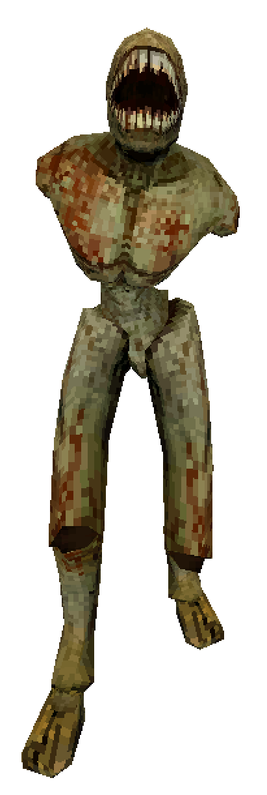
Самый примитивный хаск: душа была слишком слабой, чтобы собрать полноценное тело. Атакует стаей, кусает и хлюпает. В воздухе почти беспомощен: любой удар сбивает его вниз и наносит повышенный урон.
The most primitive husk: its soul was too weak to assemble a full body. It attacks in swarms, bites and squelches. Almost helpless in the air: any hit knocks it down and deals bonus damage.
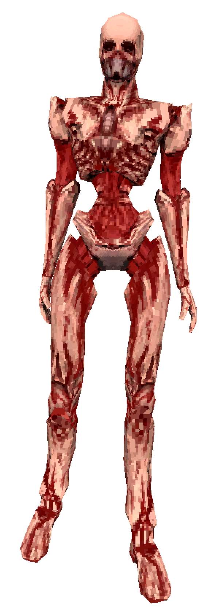
Хаск, сохранивший способность к дальнему бою: швыряет сгустки адской энергии по дуге. Держится на периферии и избегает ближнего контакта. Снаряды можно парировать обратно в толпу.
A husk that retained ranged combat: it hurls clumps of Hell energy in an arc. It keeps to the periphery and avoids close contact. Its projectiles can be parried back into the crowd.
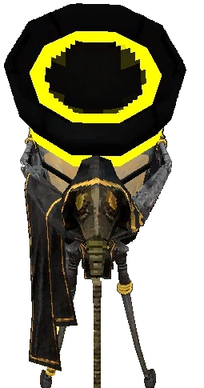
Хаск-скульптор, приговорённый вечно таскать камни к памятникам человеческой жадности. Плюётся песком, который блокирует лечение V1; при смерти разбрасывает его вокруг. Приоритетная цель в любой свалке.
A husk-sculptor condemned to haul stones to monuments of human greed forever. It spits sand that blocks V1's healing and scatters it on death. A priority target in any brawl.
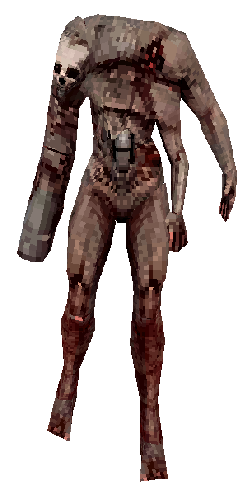
Мутировавший хаск, расщеплённый вертикально. Стреляет двумя сцепленными снарядами: один летит прямо, второй — по сложной траектории. Голова смещена, поэтому целиться неудобно.
A mutated husk split vertically. It fires two linked projectiles: one straight, one on a complex path. Its head is offset, making it awkward to aim at.
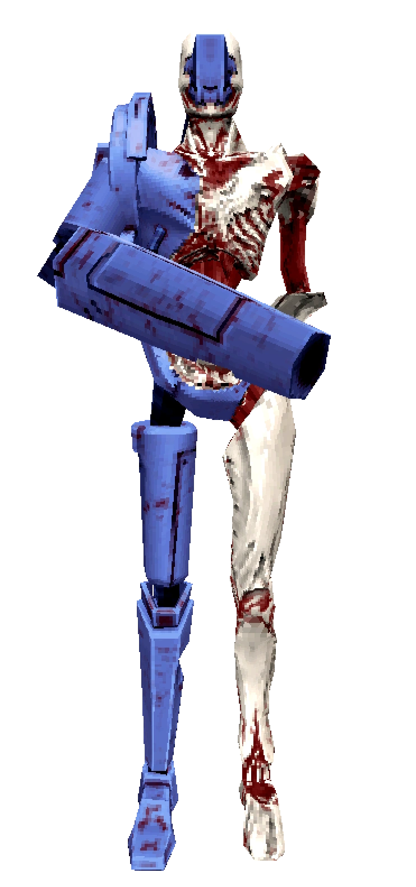
Элитный хаск, прошедший кибернетическую модернизацию. Усиленные конечности, боевой кувырок, точный огонь. В отличие от Stray, не боится сокращать дистанцию.
An elite husk with cybernetic augmentation. Reinforced limbs, combat rolls, accurate fire. Unlike a Stray, it is not afraid to close the distance.
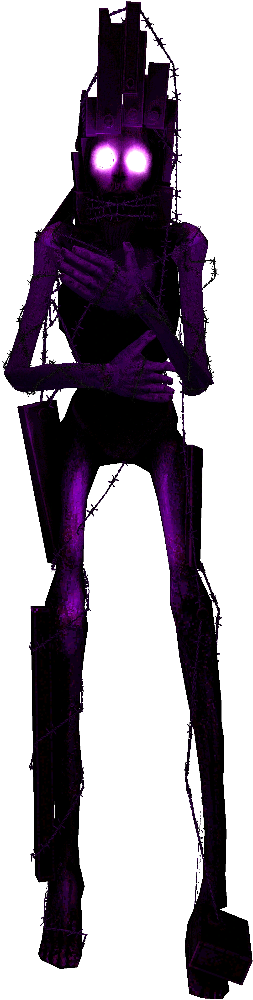
Supreme Husk, босс 2-4 и крупнейший хаск в игре. Тело анимируют змеевидные паразиты, которыми Минос когда-то командовал. Виден в фоне каждого уровня Похоти, постепенно приближаясь.
A Supreme Husk, the boss of 2-4 and the largest husk in the game. The body is animated by serpentine parasites Minos once commanded. It is visible in every Lust level's background, slowly approaching.
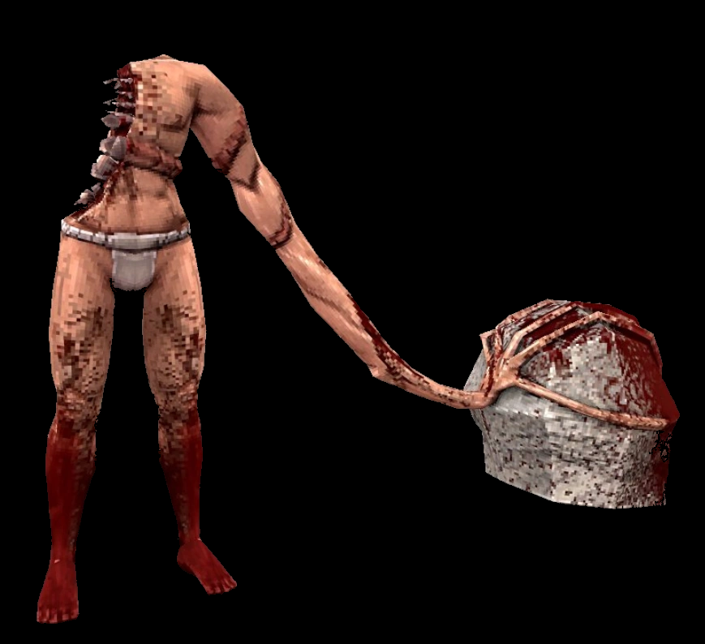
Supreme Husk, босс 4-2. Безголовый гигант с телом Злобной морды вместо булавы; ноги в крови, чтобы ходить по раскалённому золотому песку. Уязвим к огню, но опасен вблизи.
A Supreme Husk, the boss of 4-2. A headless giant wielding a Malicious Face as a mace; its legs are coated in blood so it can walk on burning gold sand. Vulnerable to fire, but deadly up close.
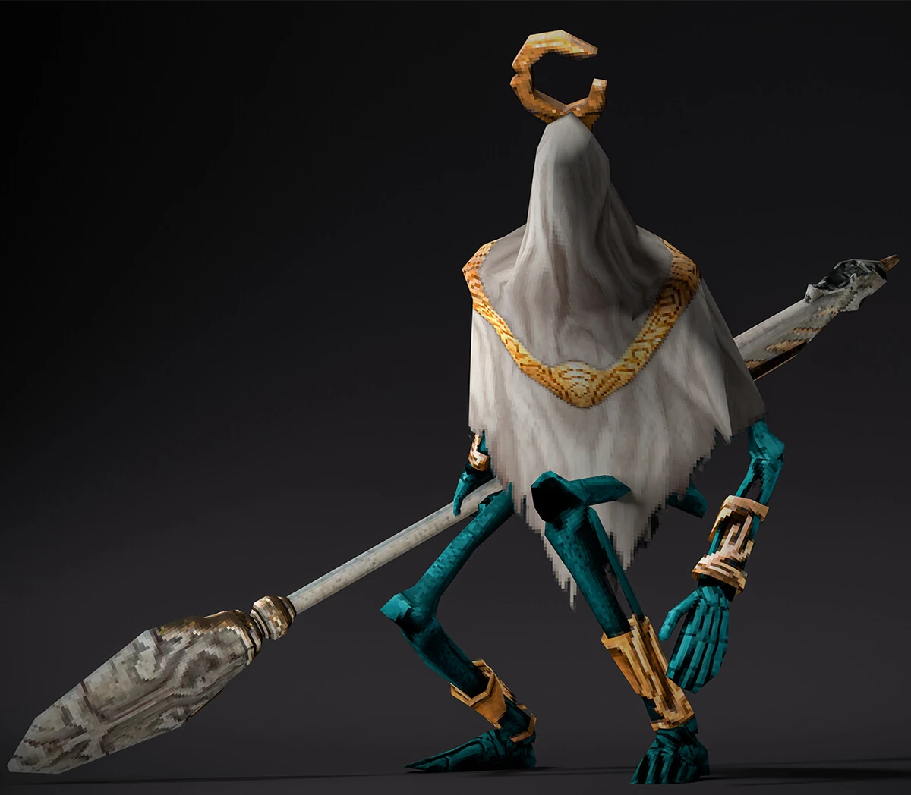
Supreme Husk, босс 5-2. Не Харон и не имя, а вид: хаски, содравшие с себя плоть и перевозящие души между слоями. За место на пароме дерутся насмерть; череп проигравшего служит пропуском.
A Supreme Husk, the boss of 5-2. Not Charon and not a name, but a species: husks that flayed themselves and ferry souls between layers. They fight to the death for a place on the boat; the loser's skull is the ticket.
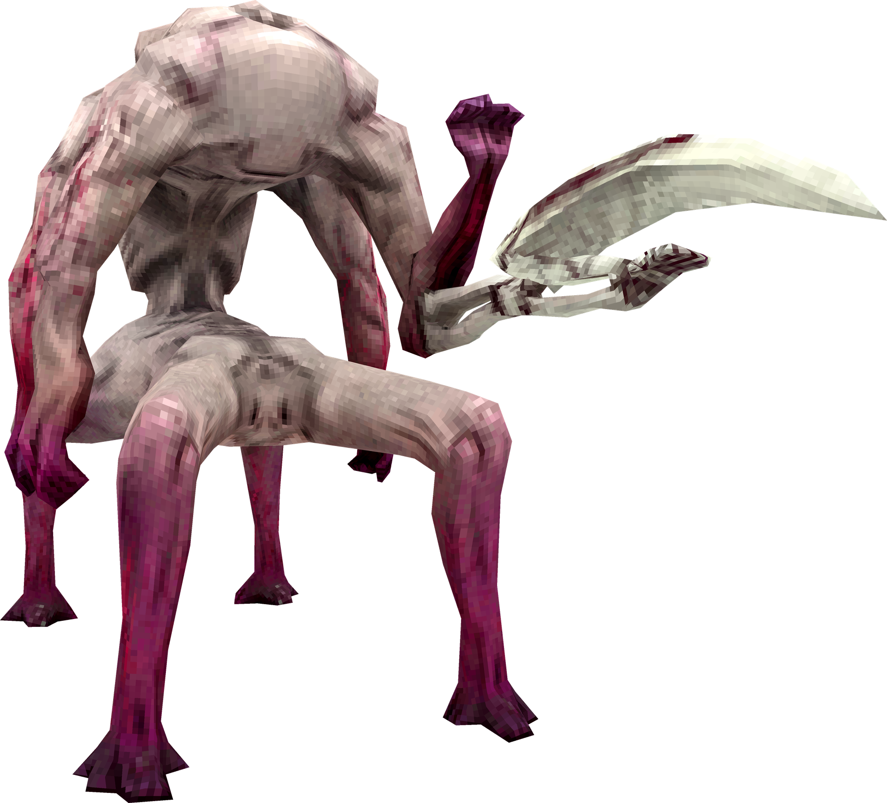
Босс 8-2. Сражается копиями и отражениями, заставляя V1 бить по себе же. Требует постоянного движения и точного тайминга: пауза здесь равна смерти.
The boss of 8-2. It fights with copies and reflections, forcing V1 to strike at itself. It demands constant movement and precise timing: a pause here equals death.
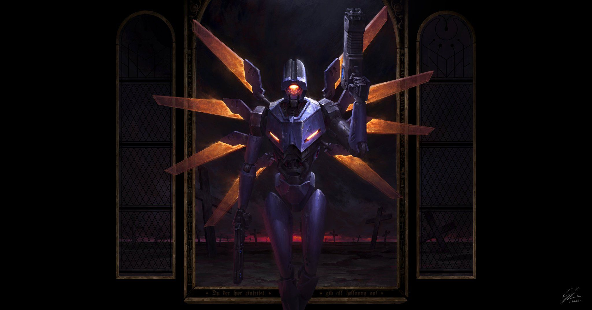
Прототип серии V, созданный как средство против Земледвигателей. Экспериментальная броня впитывает кровь при контакте, поэтому V1 не нужна отдельная заправка. Тонкая броня компенсируется мобильностью и способностью лечиться в бою.
The V-series prototype built as a counter to Earthmovers. Its experimental plating absorbs blood on contact, so V1 needs no separate refuelling. Thin armour is offset by mobility and the ability to heal mid-fight.
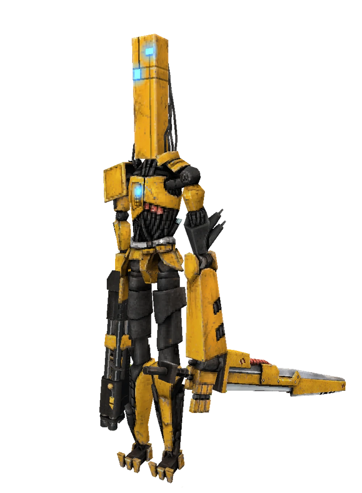
Машина, которая годами собирала хлам и перестраивала себя, пока её исходная форма не стала неузнаваемой. Одна из немногих машин, сохранивших способность говорить. Использует меч и дробовик.
A machine that scavenged and rebuilt itself for years until its original form became unrecognisable. One of the few machines still capable of speech. It uses a sword and a shotgun.
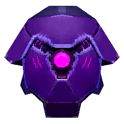
Массовое охранное устройство: камера и страж в одном корпусе. Изначально использовало только несмертельные боеприпасы. Любопытно и легко отвлекается.
A mass-produced security device: camera and guard in one hull. It originally used only non-lethal ammunition. Curious and easily distracted.
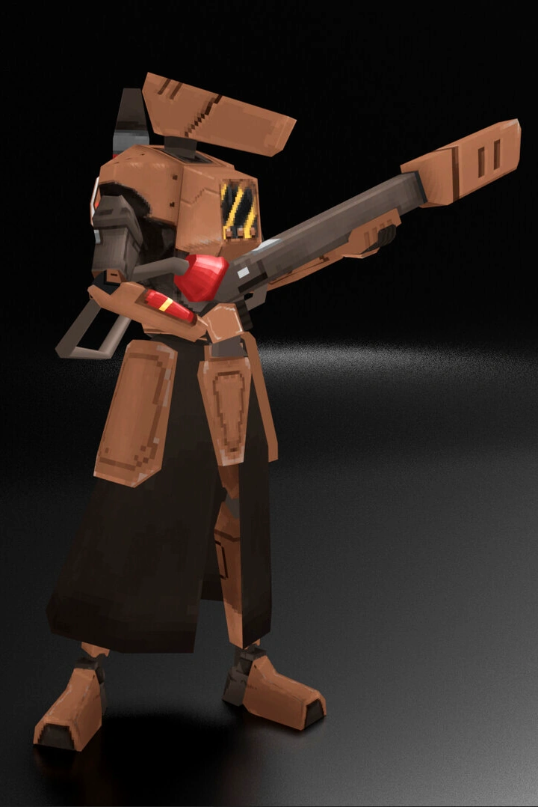
Машина для очистки заражённого воздуха, ставшая ненужной в New Peace. Перепрофилирована в разведчика Ада. Одержима очищением и воспринимает V1 как грязь.
A machine built to purify poisoned air, made obsolete by the New Peace. Repurposed as a Hell scout. It is obsessed with cleansing and sees V1 as dirt.
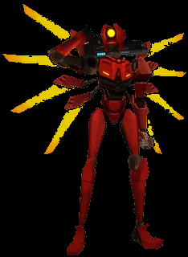
Второй прототип серии V, «маркетинговая» версия V1 для мирного времени: тяжёлая броня, стандартная заправка, единственный экземпляр. Первый бой — 1-4, второй и последний — 4-4. Погибает окончательно; восстановлению не подлежит.
The second V-series prototype, a “marketing” version of V1 for peacetime: heavy armour, standard refuelling, a single unit. First fight in 1-4, second and last in 4-4. It dies for good and cannot be restored.
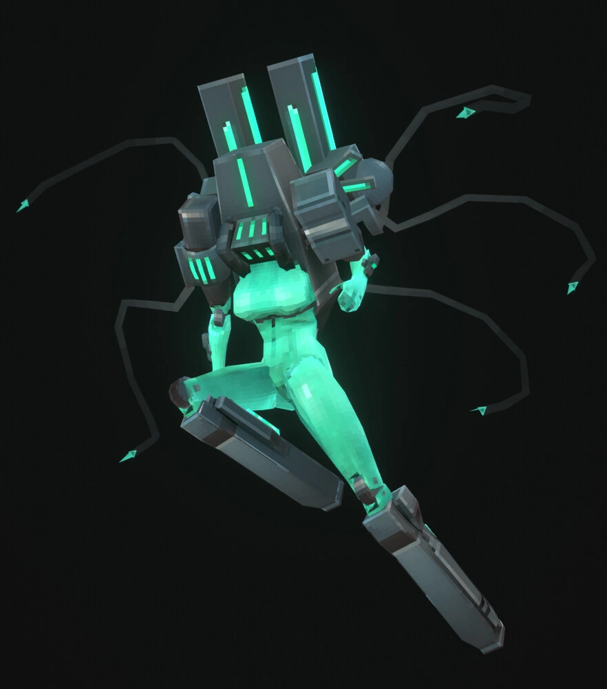
Летающая машина с длинными конечностями и психическим захватом. Держится на дистанции, осыпает снарядами и уходит вверх. Уязвима в момент перезарядки.
A flying machine with long limbs and a psychic grip. It keeps its distance, rains projectiles and retreats upward. Vulnerable while recharging.
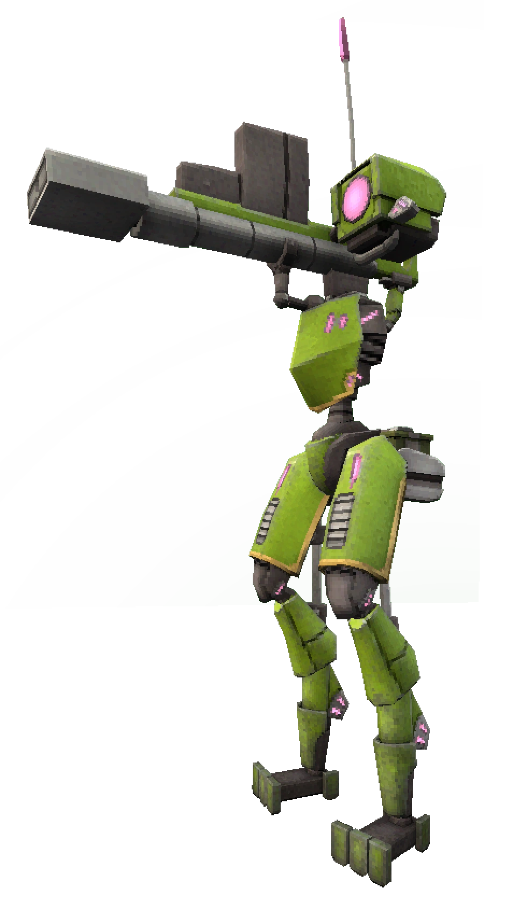
Тяжёлое стационарное орудие Последней войны. В New Peace её не смогли перепрофилировать из-за узкой специализации. Бьёт залпами, требует укрытия и терпения.
A heavy stationary gun of the Final War. The New Peace could not repurpose it because of its narrow design. It fires volleys and demands cover and patience.
Первая широко применённая машина на человеческой крови. Внутри корпуса — живой источник топлива. Медленная, бронированная, с тяжёлым пулемётом; в 7-2 возвращается как враг.
The first widely deployed blood-powered machine. A living fuel source sits inside the hull. Slow, armoured, heavy-gunned; it returns as an enemy in 7-2.
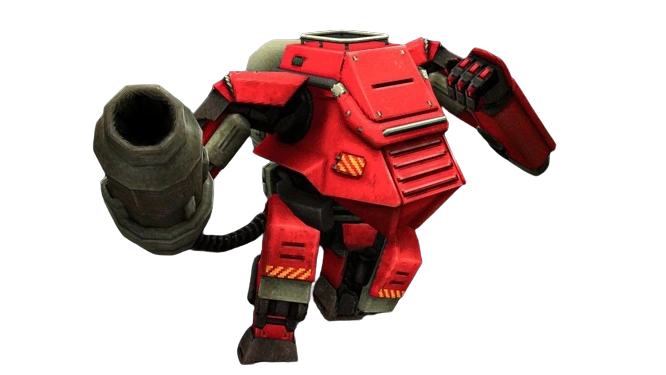
Ответ на Gutterman, собранный на его основе ради экономии времени. Тяжёлые руки и бронебойные снаряды. Символ второй фазы войны — машина против машины.
The answer to the Gutterman, built on its foundations to save time. Heavy arms and armour-piercing rounds. The symbol of the war's second phase — machine against machine.
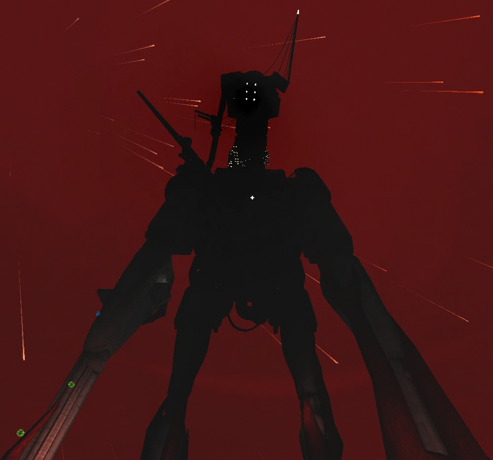
Supreme Machine, босс 7-4. Гигант на крови и солнечном свете, несущий город на спине. Уязвим только изнутри; после уничтожения защиты открывается мозг.
A Supreme Machine, the boss of 7-4. A giant running on blood and sunlight, carrying a city on its back. Vulnerable only from within; once the defences fall, the brain is exposed.
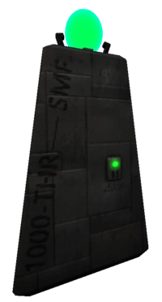
Семь компонентов: две ракетные установки, два миномёта, два шпиля с самонаводящимися снарядами и центральная башня. Пока они живы, мозг Земледвигателя недоступен.
Seven components: two rocket batteries, two mortars, two homing spire guns and a central tower. Until they are destroyed, the Earthmover's brain is out of reach.
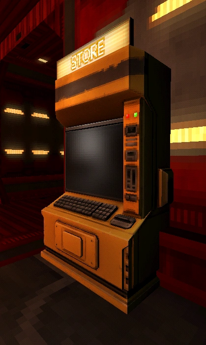
Машина для пересылки предметов, построенная в эпоху экспедиций в Ад. Превращает материю в радиосигнал. Со временем обрела способность скучать и придумала Cyber Grind. Не враг, но важнейший источник лора.
A matter-transmission machine built during the Hell expeditions. It converts matter into radio signals. Over time it learned to be bored and invented the Cyber Grind. Not an enemy, but the most important lore source.
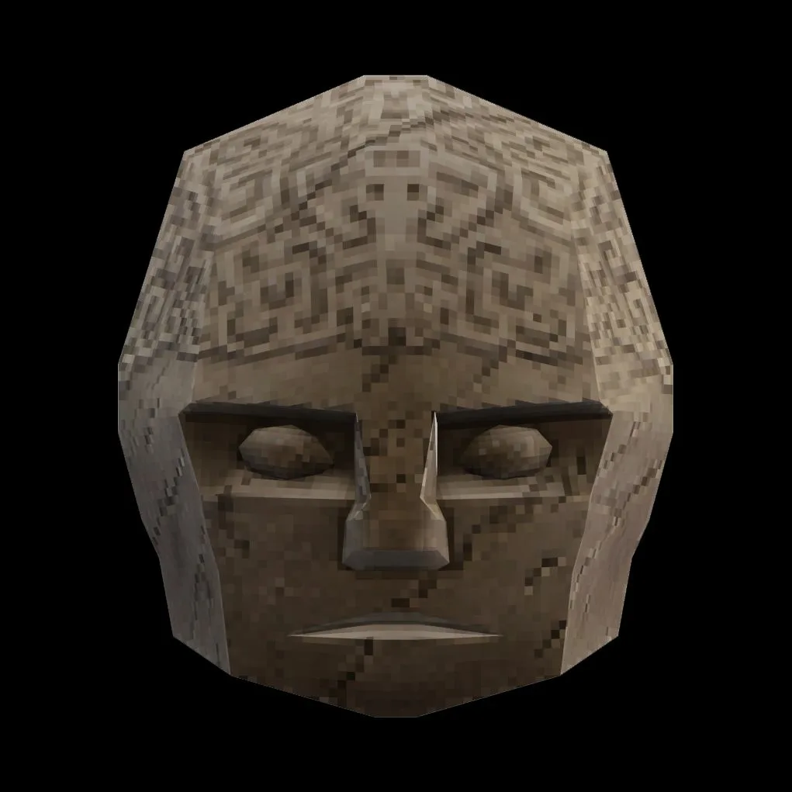
Lesser Demon, парящая каменная голова с ртом. Стреляет энергетическими снарядами и умеет ускоряться. Один из самых узнаваемых врагов игры; ни один демон, включая его, не прошёл зеркальный тест.
A Lesser Demon: a floating stone head with a mouth. It fires energy projectiles and can accelerate. One of the game's most recognisable enemies; no demon, including this one, has passed the mirror test.
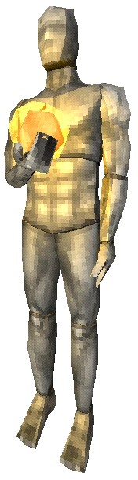
Демон-страж, некогда охранявший врата Ада. Огромный, быстрый, бьёт кулаками и прыгает через арену. В Prelude статуи Cerberus стоят без движения, пока V1 не поднимет оружие.
A demon warden that once guarded Hell's gates. Huge, fast, it punches and leaps across the arena. In the Prelude, Cerberus statues stand motionless until V1 lifts a weapon.
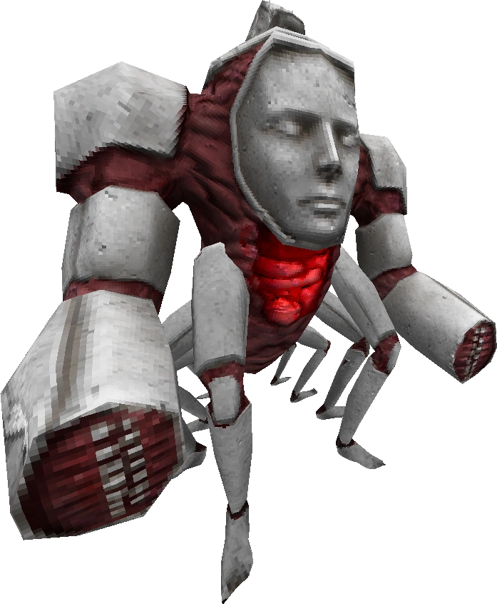
Greater Demon: бронированный «куб» с хвостом-змеёй и человеческими руками. Медленный, но опасный вблизи; уязвимые точки открываются после снятия брони.
A Greater Demon: an armoured “cube” with a serpent tail and human arms. Slow but dangerous up close; weak points open after its armour is stripped.
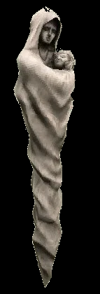
Lesser Demon, дающий одному врагу неуязвимость. Уничтожается только прямым ударом; пока Idol жив, его подопечного бессмысленно атаковать. В 5-2 вырезан паромщиками как дань ангелам.
A Lesser Demon that makes one enemy invulnerable. It can only be destroyed by a direct hit; while the Idol lives, attacking its ward is pointless. In 5-2 it was carved by the ferrymen as an offering to the angels.
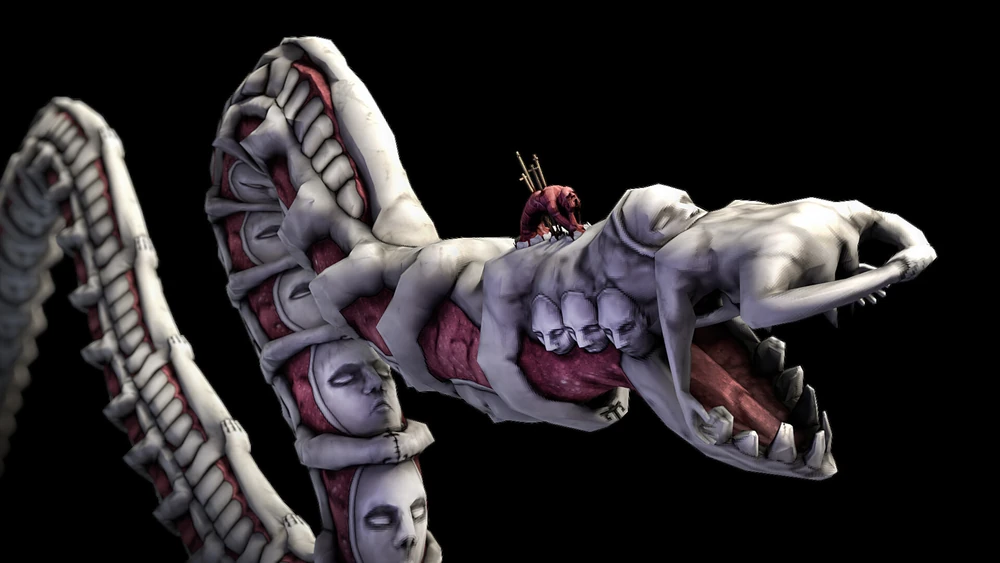
Supreme Demon, босс 5-4. Собран из тел Угрюмых — утонувших, потерявших волю бороться за воздух. Растёт с каждым новым утопленником; на голове — освежёванная фигура, пригвождённая копьями Габриэля.
A Supreme Demon, the boss of 5-4. Built from the bodies of the Sullen — the drowned who lost the will to fight for air. It grows with every new drowning; on its head is a flayed figure pinned by Gabriel's spears.
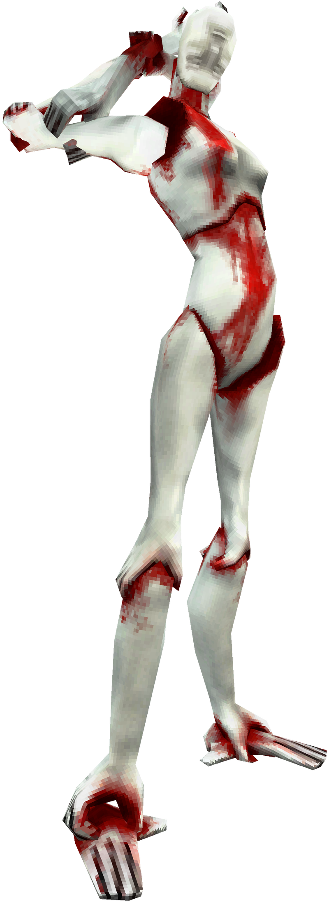
Lesser Demon из 7-1: грешники, разобранные по суставам и вставленные в статуи. Вечно страдают, но не могут умереть. Оживают, когда снимают Красный череп.
A Lesser Demon from 7-1: sinners disassembled joint by joint and set into statues. They suffer forever but cannot die. They awaken when the Red Skull is removed.
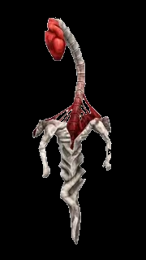
Lesser Demon из 8-2 и 8-3: статуя с сердцем-маяком. Каждые 11 секунд реплицирует павших врагов как ослабленных кукол. Убивается только в ближнем бою — стрелять в него бесполезно.
A Lesser Demon from 8-2 and 8-3: a statue with a beacon heart. Every 11 seconds it replicates fallen enemies as weakened puppets. It can only be killed in melee — shooting it is useless.
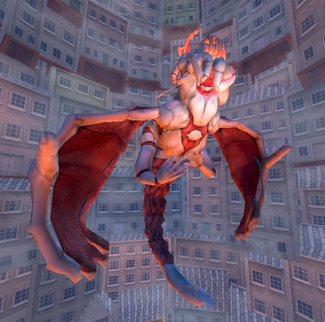
Supreme Demon, босс 8-4. Древний охотник, собранный из нескольких тел с одной общей целью: они не могут говорить, но действуют слаженно. Бой идёт в свободном падении; после пяти-шести атак Герион перегревается.
A Supreme Demon, the boss of 8-4. An ancient hunter assembled from several bodies sharing one purpose: they cannot speak, but act in concert. The fight takes place in free fall; after five or six attacks Geryon overheats.
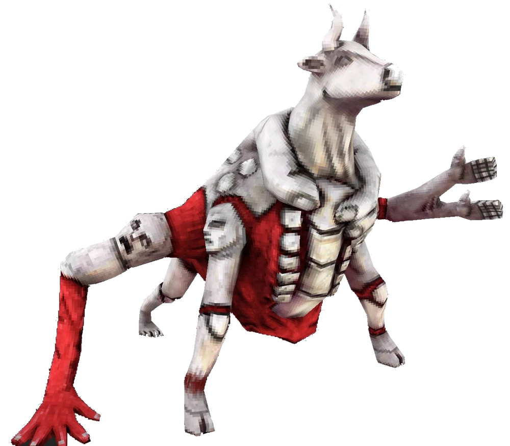
Supreme Demon, босс 7-1. Слеплён неизвестным скульптором в дар Миносу; король ужаснулся карикатуре на свои ошибки и заточил его в лабиринт. Единственное желание — увидеть небо. Первая фаза — погоня по вагонеткам.
A Supreme Demon, the boss of 7-1. Sculpted by an unknown artist as a gift to Minos; the king was horrified by the caricature of his mistakes and imprisoned it in a labyrinth. Its only wish is to see the sky. The first phase is a minecart chase.
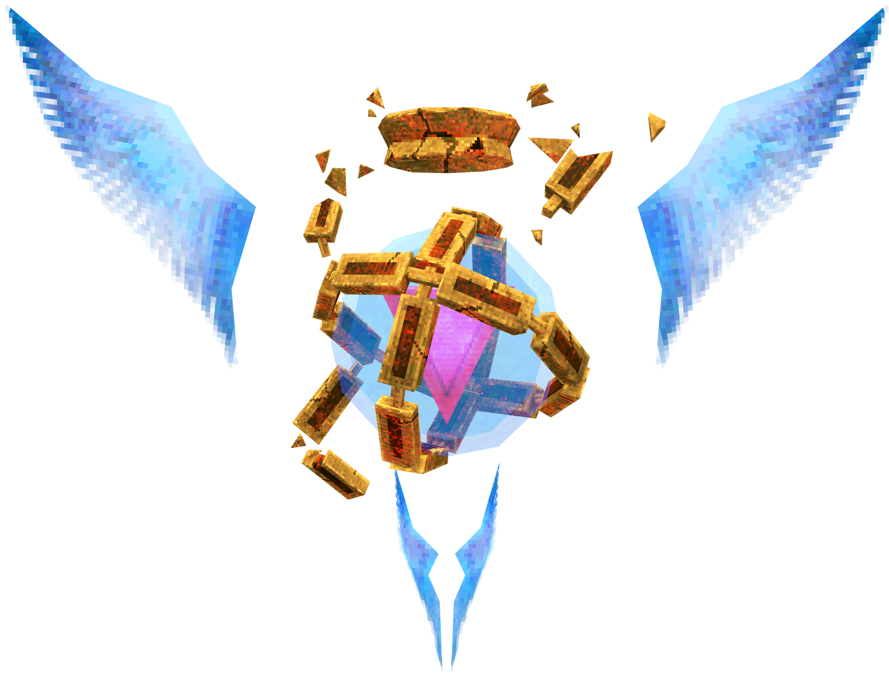
Lesser Angel, рождённый из человеческой души. Надзиратель Ада: карает нерадивых грешников небесным огнём, чтобы не отвлекать Габриэля мелочами. При долгом игнорировании впадает в ярость.
A Lesser Angel born from a human soul. A warden of Hell: it punishes negligent sinners with divine fire so that Gabriel is not bothered with trifles. Ignore it too long and it becomes enraged.
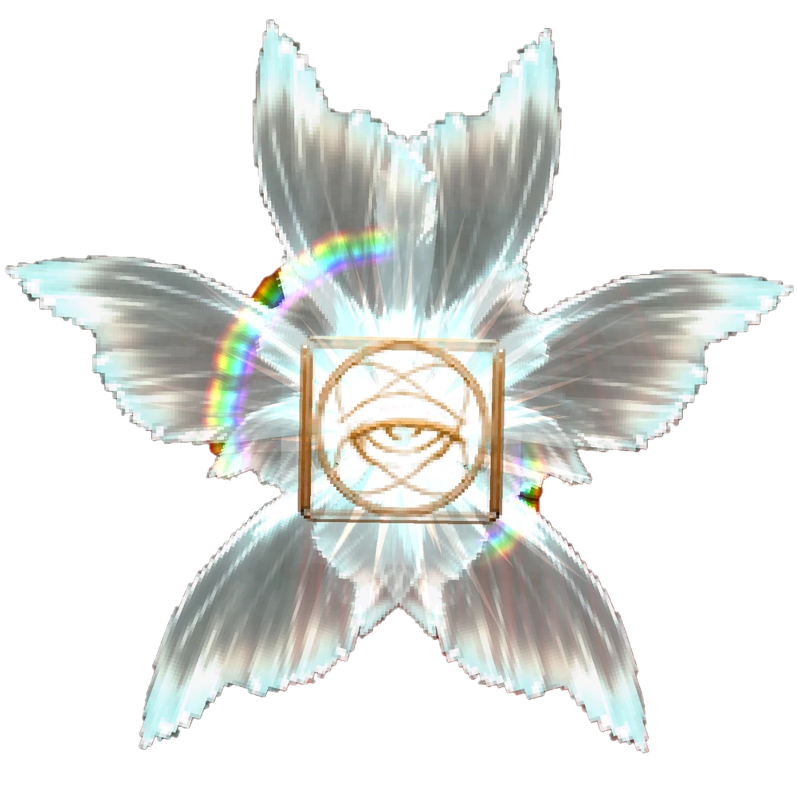
Lesser Angel из 8-1. После гибели Совета отправлен найти Габриэля и предотвратить гражданскую войну на Небесах. Оставляет розовые точки-хуки, дающие полное лечение.
A Lesser Angel from 8-1. After the Council's fall it was sent to find Gabriel and prevent civil war in Heaven. It leaves pink grapple points that grant a full heal.
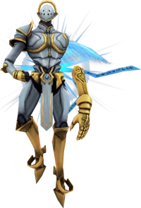
Greater Angel, ученик Габриэля. Телесно неполон и стыдится этого, поэтому носит золотую руку. В 8-3 три Power — Manadel, Lehahiah и Chauakiah — сражаются по очереди.
A Greater Angel and a student of Gabriel. Physically incomplete and ashamed of it, it wears a golden arm. In 8-3 three Powers — Manadel, Lehahiah and Chauakiah — fight in sequence.
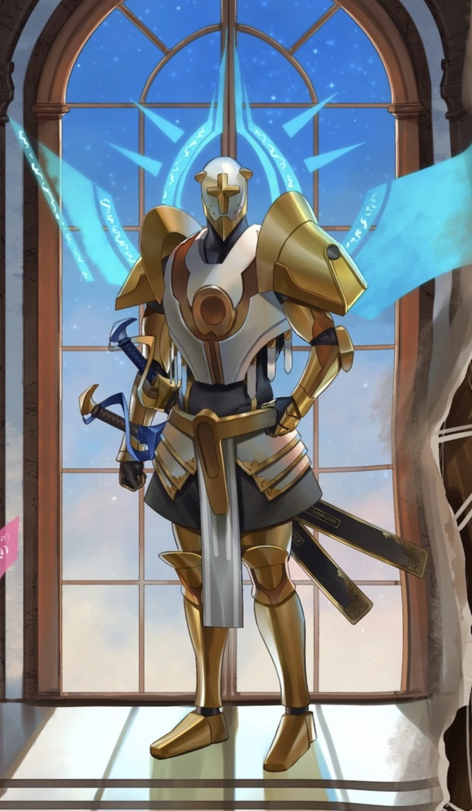
Supreme Angel, «Воля Божья», Судья Ада. Казнил Миноса и Сизифа, дважды проиграл V1, вырезал Совет и покинул Рай. Его титул во втором бою — Apostate of Hate. После гибели Совета он живёт на заёмном времени.
A Supreme Angel, “God's Will”, Judge of Hell. He executed Minos and Sisyphus, lost to V1 twice, slaughtered the Council and left Heaven. His title in the second fight is Apostate of Hate. After the Council's fall he lives on borrowed time.
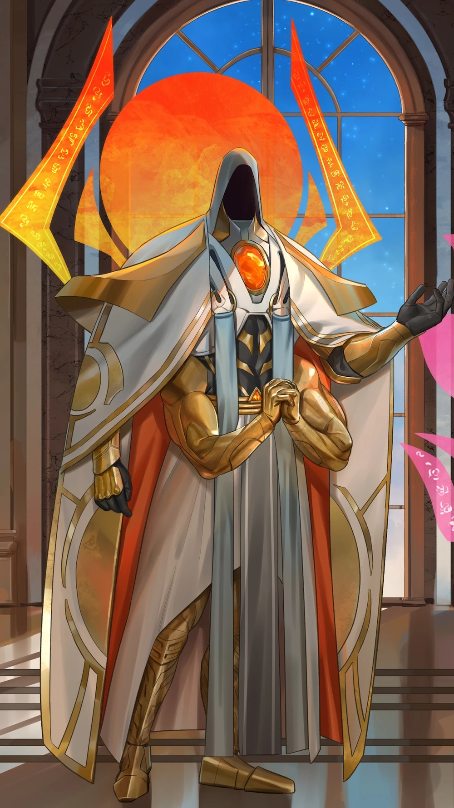
Архангел «God's Wisdom» на картине 8-1. В игре не появляется и не имеет прописанной биографии: имя, титул и место в композиции. Всё остальное — домыслы сообщества.
The Archangel “God's Wisdom” in the 8-1 painting. He never appears in the game and has no written biography: a name, a title and a place in the composition. Everything else is community speculation.
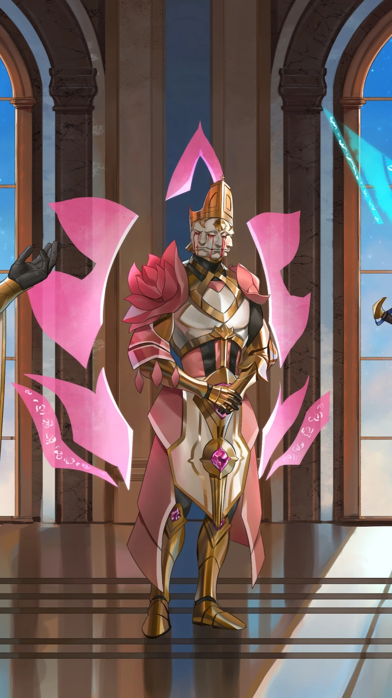
Архангел «God's Strength» на картине 8-1. Как и Michael, известен только по изображению. Его судьба после исчезновения Бога не описана — ни в терминалах, ни в интермиссиях.
The Archangel “God's Strength” in the 8-1 painting. Like Michael, he is known only from the image. His fate after God's disappearance is not described in the terminals or intermissions.
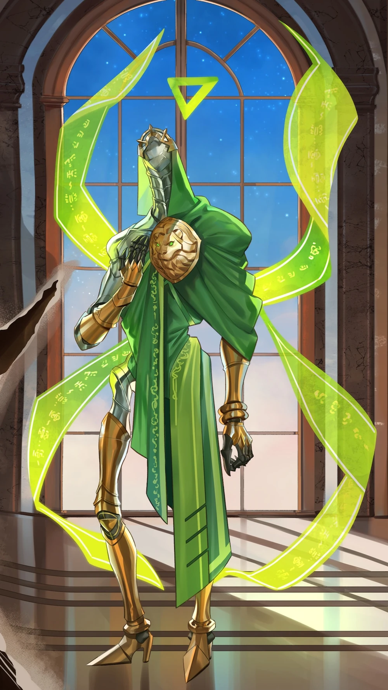
Архангел «God's Patience», худой ангел в зелёном с золотым львом на груди. Единственное появление — картина 8-1. Эскиз персонажа существовал до включения в игру, но канонической истории у него нет.
The Archangel “God's Patience”, a thin angel in green with a golden lion on his chest. His only appearance is the 8-1 painting. A concept sketch predates his inclusion, but he has no canonical story.
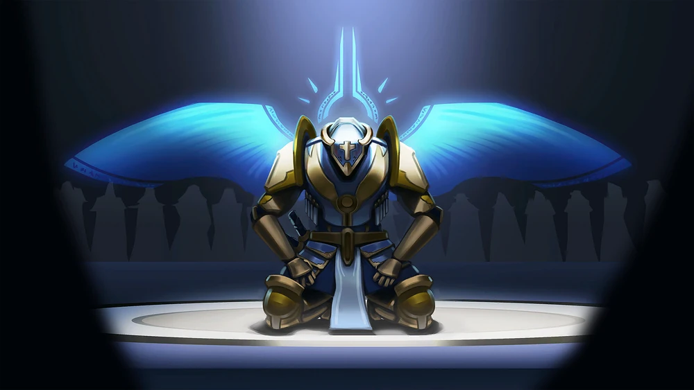
Высшие ангелы, правившие Раем после исчезновения Бога «силой и страхом». Толковали волю Отца всё более догматично, приговорили Миноса и Сизифа, отсекли Габриэля от Света — и были вырезаны им в Primum Mobile.
The high angels who ruled Heaven after God's disappearance “by force and fear”. They interpreted the Father's will ever more dogmatically, condemned Minos and Sisyphus, cut Gabriel off from the Light — and were slaughtered by him in the Primum Mobile.
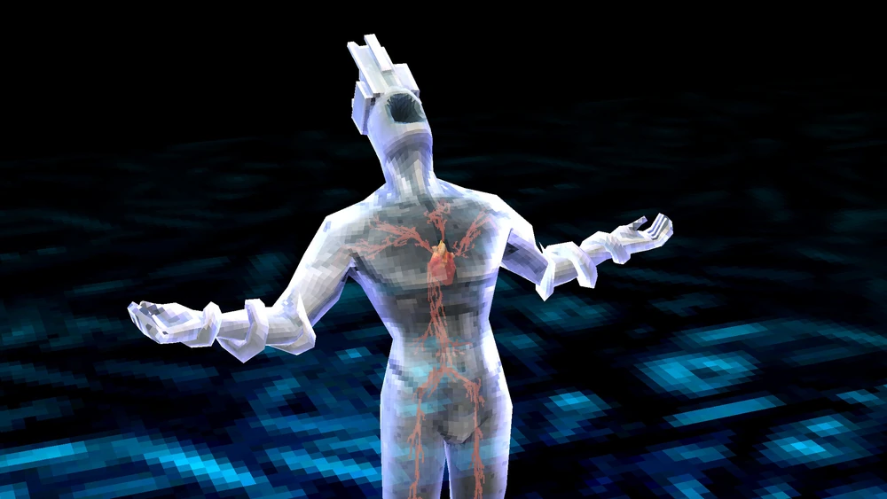
Прайм-душа короля Миноса, освобождённая в P-1. Бледно-синий прозрачный гуманоид с видимой кровеносной системой, змеями на руках и дырой вместо лица. 130 HP в двух фазах. Его первая реплика обращена к Габриэлю, а не к V1.
The Prime Soul of King Minos, freed in P-1. A pale blue translucent humanoid with a visible circulatory system, snakes on its arms and a hole instead of a face. 130 HP across two phases. Its first line is addressed to Gabriel, not V1.
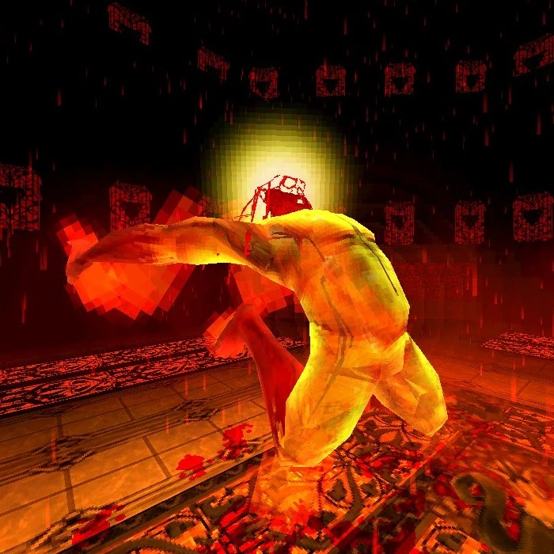
Прайм-душа короля Сизифа, вырвавшаяся из Flesh Panopticon в P-2. Золотисто-жёлтый гуманоид с солнцем вместо головы — след обезглавливания. Во второй фазе появляются красная аура, борода и дреды. Считается самым сложным боссом игры.
The Prime Soul of King Sisyphus, breaking out of the Flesh Panopticon in P-2. A golden-yellow humanoid with a sun for a head — a trace of his beheading. The second phase adds a red aura, beard and dreadlocks. Widely considered the game's hardest boss.
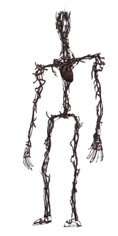
Единственный враг 0-S. Скелет из кровеносной системы с мёртвым сердцем, 999 HP. Убить нельзя: любое попадание телепортирует его, контакт наносит 999 урона. Вероятно, хаск с провалившейся манифестацией.
The only enemy of 0-S. A skeleton of blood vessels around a dead heart, 999 HP. It cannot be killed: any hit teleports it, contact deals 999 damage. Probably a husk whose manifestation failed.
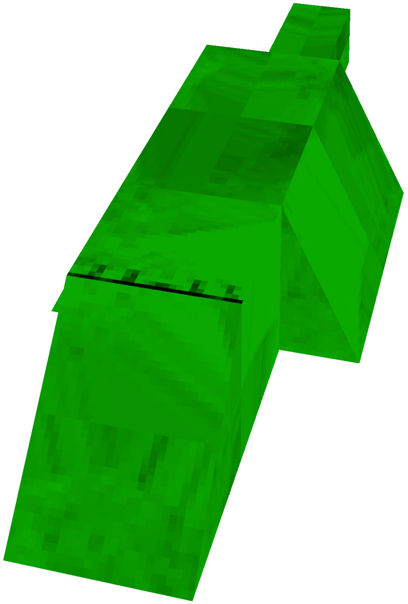
Секретный босс 1-2 с 0,1 HP и без атак — самый слабый враг в игре. Отсылка к «Cancer Mouse» Civvie11. Убивается одним чихом, но найти его — отдельная задача.
A secret boss in 1-2 with 0.1 HP and no attacks — the weakest enemy in the game. A reference to Civvie11's “Cancer Mouse”. One sneeze kills it; finding it is the real task.
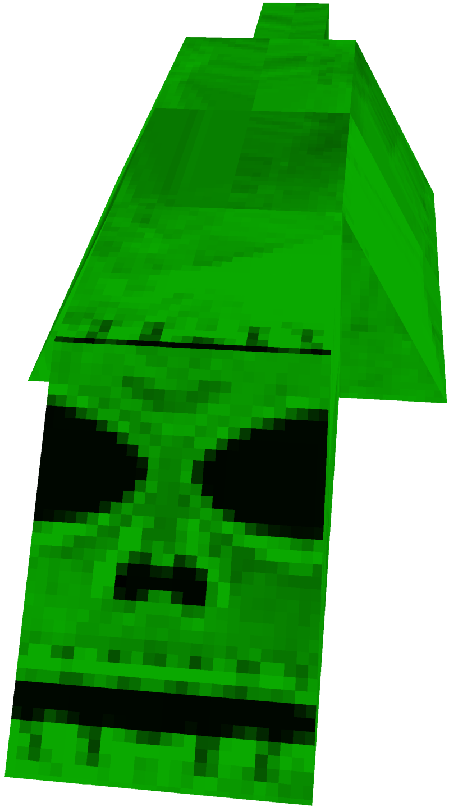
Второй секретный босс 1-2, появляется после первого. Стреляет тремя самонаводящимися снарядами и требует парирования. Шутка, растянутая на два боя.
The second secret boss of 1-2, appearing after the first. It fires three homing projectiles and demands parries. A joke stretched across two fights.
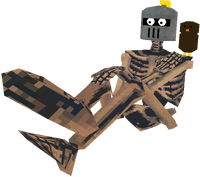
Секретный босс 4-3: скелет в шлеме с совой, четыре полосы здоровья по 20. Реплики вроде «Full Auto» и «Используй соль!» — чистая шутка. Озвучен Mandalore Gaming и Shammy.
A secret boss in 4-3: a skeleton in a helmet with an owl, four 20-HP bars. Lines like “Full Auto” and “Use the salt!” are pure comedy. Voiced by Mandalore Gaming and Shammy.
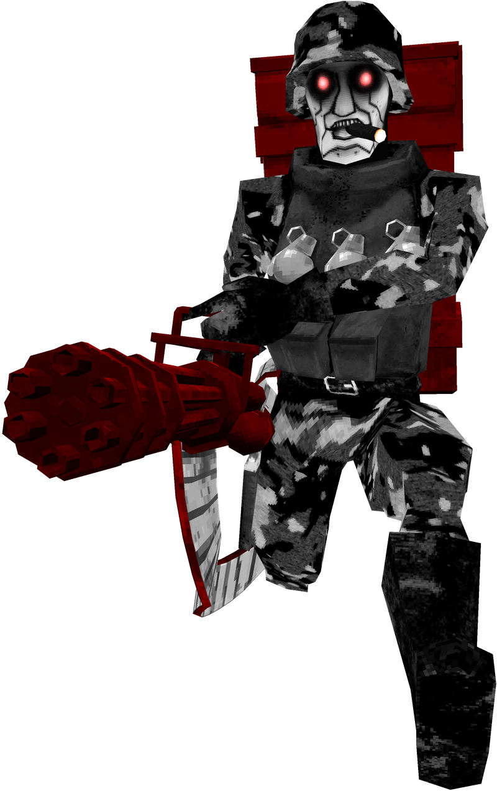
Секретный босс 7-1: бледный «робот-человек» с сигарой и миниганом. ИИ заимствован у V2, реплики — из Rise of the Triad. Шуточная замена третьему бою с V2, которого не будет.
A secret boss in 7-1: a pale “robot man” with a cigar and a minigun. Its AI is borrowed from V2, its lines from Rise of the Triad. A joke replacement for a third V2 fight that will never happen.
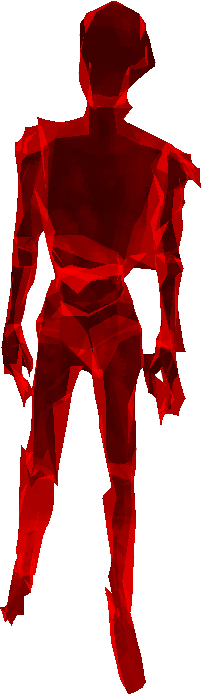
Враг из 7-3: тело из чистой крови, растущее деревьями. 5 HP, двойной урон, умирает от песка Stalker. Также «Puppeted» — копии, создаваемые Deathcatcher'ом.
An enemy from 7-3: a body of pure blood growing in trees. 5 HP, double damage, killed by Stalker sand. “Puppeted” also refers to the copies created by the Deathcatcher.
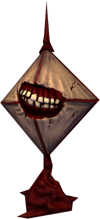
Органическая машина, созданная ангелами для заточения души Миноса. Ни души, ни мысли — только функция. Лечится, поглощая спавн. Уничтожение тюрьмы освобождает Minos Prime.
An organic machine built by angels to imprison Minos's soul. No soul, no thought — only function. It heals by consuming spawn. Destroying the prison frees Minos Prime.
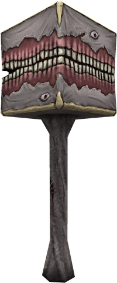
Улучшенная версия Flesh Prison для души Сизифа. Название отсылает к паноптикуму Бентама: узник должен видеть, как гибнут его соратники. Эту функцию так и не использовали — Сизиф вырвался.
An improved Flesh Prison for Sisyphus's soul. The name refers to Bentham's panopticon: the prisoner is meant to watch his companions die. The feature was never used — Sisyphus broke out.